Q01 · 17.5 / Types of Small-Scale Mutations 正式分類
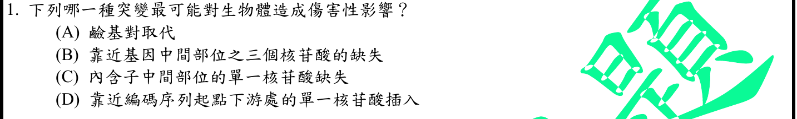
本地原卷PDF23 · 官方混科卷PDF23 · 官方原答案PDF1最下方生物表 · 釋疑PDF5 · 8/19第二次會議PDF34
官方採計：D 原答案：D
8/17及8/19第二次會議兩版生物釋疑均維持原答案D
主分類：Ch17 Gene Expression: From Gene to Protein
17.5 / Types of Small-Scale Mutations
目錄行1085；條目起始印刷頁357；實際目錄 PDF39
主分類理由：17.5 / Types of Small-Scale Mutations：判斷編碼序列近起點單一插入造成移碼，核心是小尺度突變類型及蛋白後果。
次分類理由：無另列最小次條目；以357–359閱讀框機制和兩版釋疑確認D；保留最可能與非絕對傷害的界線，主17.5不擴成DNA複製。
科學說明：官方D，兩版釋疑維持。非三倍數插入使插入點之後的閱讀框改變，可能提前終止；三核苷酸缺失通常不移碼。官方「整個蛋白序列完全錯誤」及不存在較輕情形過於絕對：插入前序列不因此改變，傷害仍依位置與功能而異。題問最可能，保留D並分開記錄科學限定。
來源涵蓋範圍：Campbell正文支援分類原理；題設限定、章導論或條目邊界及科學措辭差異逐題保留。
教材正文：印刷357／PDF406、印刷358／PDF407、印刷359／PDF408
補充來源：本題未另列課本外來源
另行比較：三鹼基缺失與单鹼基移碼是否必然傷害大小可比較
以357–359閱讀框機制和兩版釋疑確認D；保留最可能與非絕對傷害的界線，主17.5不擴成DNA複製。
結論：證據確認，分類疑義已解決。完整覆核紀錄
Q02 · 33 / An Introduction to Invertebrates 正式分類
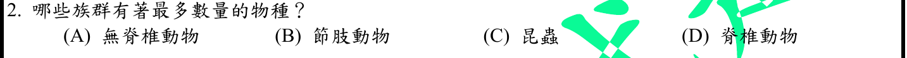
本地原卷PDF23 · 官方混科卷PDF23 · 官方原答案PDF1最下方生物表 · 釋疑PDF5 · 8/19第二次會議PDF34
官方採計：A 原答案：A
8/17及8/19第二次會議兩版生物釋疑均維持原答案A
主分類：Ch33 An Introduction to Invertebrates
33 / An Introduction to Invertebrates
本題跨全體無脊椎動物的數量比較，證據在章導論686–689、先於33.1；真實TOC沒有更小的導論條目。不虛構Invertebrates葉節點，不用單一動物門冒充整體。 目錄行2089；條目起始印刷頁686；實際目錄 PDF44
次分類：Ch33 An Introduction to Invertebrates
33.4 / Arthropods
目錄行2133；條目起始印刷頁706；實際目錄 PDF44
主分類理由：33 / An Introduction to Invertebrates：整體無脊椎動物的物種數與包含關係在第33章導論686–689，先於33.1；真實目錄沒有更小導論條目。
次分類理由：33.4 / Arthropods：節肢動物與昆蟲是無脊椎動物子集合，706及710補足比較，保留同章次目。
科學說明：官方A，兩版釋疑維持。課本686標示無脊椎動物超過已知動物物種95%；昆蟲屬節肢動物，節肢動物屬無脊椎動物。「族群」在題中泛指類群，並非生態學同種族群；無脊椎動物也不是一個單系分類階級，物種數不能換成個體數。
來源涵蓋範圍：Campbell正文支援分類原理；題設限定、章導論或條目邊界及科學措辭差異逐題保留。
教材正文：印刷686／PDF735、印刷687／PDF736、印刷688／PDF737、印刷689／PDF738、印刷706／PDF755、印刷710／PDF759
補充來源：本題未另列課本外來源
另行比較：是否直接用節肢動物代表全體無脊椎動物
實看目錄44及正文735，導論為全體證據位置；章導論L2089加Arthropods同章次目，比只用昆蟲更精確。
結論：證據確認，分類疑義已解決。完整覆核紀錄
Q03 · 44.4 / Solute Gradients and Water Conservation 正式分類
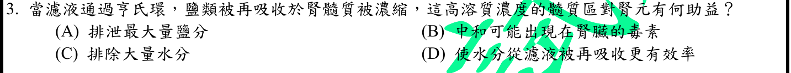
本地原卷PDF23 · 官方混科卷PDF23 · 官方原答案PDF1最下方生物表 · 已核對8/17生物釋疑PDF5下方及6 · 已核對8/19生物PDF34下方及35
官方採計：D 原答案：D
未列本輪取得8/17釋疑PDF5下方及6、8/19第二次會議官方組合PDF34下方及35；依同年答案採計，不宣稱沒有其他未取得公告
主分類：Ch44 Osmoregulation and Excretion
44.4 / Solute Gradients and Water Conservation
目錄行2977；條目起始印刷頁989；實際目錄 PDF47
次分類：Ch44 Osmoregulation and Excretion
44.4 / From Blood Filtrate to Urine: A Closer Look
目錄行2974；條目起始印刷頁987；實際目錄 PDF47
主分類理由：44.4 / Solute Gradients and Water Conservation：亨利氏環維持腎髓質滲透梯度，使水分回收及濃縮尿可行。
次分類理由：44.4 / From Blood Filtrate to Urine: A Closer Look：逐段濾液處理提供降支水通透、升支鹽運輸等機制，同章仍保存。
科學說明：官方D。高滲髓質有利降支與可透水集尿管的水再吸收；上升支不透水而運輸鹽，有助建立梯度。不是增加腎臟產尿量或直接加速腎小球過濾；集尿管水通透性仍受ADH等條件控制。
來源涵蓋範圍：Campbell正文支援分類原理；題設限定、章導論或條目邊界及科學措辭差異逐題保留。
教材正文：印刷987／PDF1036、印刷988／PDF1037、印刷989／PDF1038、印刷990／PDF1039
補充來源：本題未另列課本外來源
另行比較：排鹽與排水是否較能描述髓質梯度效益
987–990區分建梯度與使用梯度，D為回收水的效益；主次44.4同章保留去重。
結論：證據確認，分類疑義已解決。完整覆核紀錄
Q04 · 49.1 / Organization of the Vertebrate Nervous System 正式分類
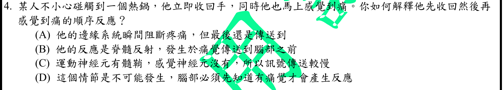
本地原卷PDF23 · 官方混科卷PDF23 · 官方原答案PDF1最下方生物表 · 已核對8/17生物釋疑PDF5下方及6 · 已核對8/19生物PDF34下方及35
官方採計：B 原答案：B
未列本輪取得8/17釋疑PDF5下方及6、8/19第二次會議官方組合PDF34下方及35；依同年答案採計，不宣稱沒有其他未取得公告
主分類：Ch49 Nervous Systems
49.1 / Organization of the Vertebrate Nervous System
目錄行3242；條目起始印刷頁1087；實際目錄 PDF48
主分類理由：49.1 / Organization of the Vertebrate Nervous System：縮手反射由脊髓局部迴路完成，先於大腦對疼痛的有意識感知。
次分類理由：無另列最小次條目；脊髓迴路已足夠解釋先縮手，不能概括所有感覺纖維無髓鞘；主神經系統組織，B確認。
科學說明：官方B。脊髓整合感覺輸入與運動輸出，使縮手可先發生；訊息仍可上傳腦，不代表大腦永遠不參與疼痛或動作調節。
來源涵蓋範圍：Campbell正文支援分類原理；題設限定、章導論或條目邊界及科學措辭差異逐題保留。
教材正文：印刷1087／PDF1136、印刷1088／PDF1137
補充來源：本題未另列課本外來源
另行比較：感覺纖維無髓鞘是否是反射先行原因
脊髓迴路已足夠解釋先縮手，不能概括所有感覺纖維無髓鞘；主神經系統組織，B確認。
結論：證據確認，分類疑義已解決。完整覆核紀錄
Q05 · 30.3 / Angiosperm Diversity 正式分類
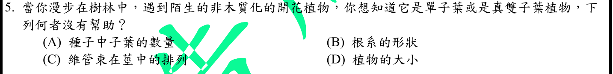
本地原卷PDF23 · 官方混科卷PDF23 · 官方原答案PDF1最下方生物表 · 已核對8/17生物釋疑PDF5下方及6 · 已核對8/19生物PDF34下方及35
官方採計：D 原答案：D
未列本輪取得8/17釋疑PDF5下方及6、8/19第二次會議官方組合PDF34下方及35；依同年答案採計，不宣稱沒有其他未取得公告
主分類：Ch30 Plant Diversity II: The Evolution of Seed Plants
30.3 / Angiosperm Diversity
目錄行1945；條目起始印刷頁649；實際目錄 PDF43
次分類：Ch35 Vascular Plant Structure, Growth, and Development
35.3 / Primary Growth of Shoots
目錄行2303；條目起始印刷頁769；實際目錄 PDF44
主分類理由：30.3 / Angiosperm Diversity：單子葉與真雙子葉的典型差異表直接比較子葉、葉脈與維管束等特徵。
次分類理由：35.3 / Primary Growth of Shoots：莖初生生長中的維管束排列支持題中判別特徵。
科學說明：官方D。植株大小在兩群均可變動，單靠大小不能有效區分；子葉數及典型葉脈、莖維管束排列較有用。題文和教材均以真雙子葉為比較對象，不把典型差異寫成沒有例外的定律。
來源涵蓋範圍：Campbell正文支援分類原理；題設限定、章導論或條目邊界及科學措辭差異逐題保留。
教材正文：印刷649／PDF698、印刷650／PDF699、印刷759／PDF808、印刷760／PDF809、印刷769／PDF818、印刷770／PDF819
補充來源：本題未另列課本外來源
另行比較：依大小或只依根系一項能否可靠區別
題文明寫真雙子葉，已修正首輪草稿不當的舊稱備註；649比較表和769莖排列支援D無幫助。
結論：證據確認，分類疑義已解決。完整覆核紀錄
Q06 · 37.3 / Epiphytes, Parasitic Plants, and Carnivorous Plants 正式分類
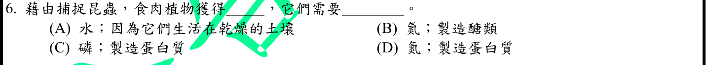
本地原卷PDF23 · 官方混科卷PDF23 · 官方原答案PDF1最下方生物表 · 已核對8/17生物釋疑PDF5下方及6 · 已核對8/19生物PDF34下方及35
官方採計：D 原答案：D
未列本輪取得8/17釋疑PDF5下方及6、8/19第二次會議官方組合PDF34下方及35；依同年答案採計，不宣稱沒有其他未取得公告
主分類：Ch37 Soil and Plant Nutrition
37.3 / Epiphytes, Parasitic Plants, and Carnivorous Plants
目錄行2469；條目起始印刷頁818；實際目錄 PDF45
次分類：Ch37 Soil and Plant Nutrition
37.2 / Essential Elements
目錄行2450；條目起始印刷頁810；實際目錄 PDF45
主分類理由：37.3 / Epiphytes, Parasitic Plants, and Carnivorous Plants：食蟲植物在缺乏礦質的環境由獵物取得氮，直接落在特殊植物營養條目。
次分類理由：37.2 / Essential Elements：必要礦物元素說明氮用於蛋白質等含氮分子合成。
科學說明：官方D。捕食昆蟲補充氮等礦質，氮可用於蛋白質合成；食蟲植物通常仍行光合作用，不把昆蟲視為取代一切光合碳源。題中醣與脂肪不是主要以氮構成的選項。
來源涵蓋範圍：Campbell正文支援分類原理；題設限定、章導論或條目邊界及科學措辭差異逐題保留。
教材正文：印刷810／PDF859、印刷818／PDF867、印刷819／PDF868
補充來源：本題未另列課本外來源
另行比較：捕食補磷或用氮製糖是否是正確配對
818食蟲植物加810氮用途支持氮與蛋白質D；保留植物光合碳來源，不推成完全異營。
結論：證據確認，分類疑義已解決。完整覆核紀錄
Q07 · 41.1 / Essential Nutrients 正式分類
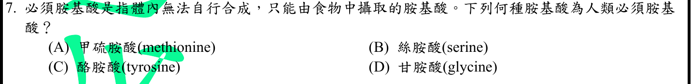
本地原卷PDF23 · 官方混科卷PDF23 · 官方原答案PDF1最下方生物表 · 已核對8/17生物釋疑PDF5下方及6 · 已核對8/19生物PDF34下方及35
官方採計：A 原答案：A
未列本輪取得8/17釋疑PDF5下方及6、8/19第二次會議官方組合PDF34下方及35；依同年答案採計，不宣稱沒有其他未取得公告
主分類：Ch41 Animal Nutrition
41.1 / Essential Nutrients
目錄行2685；條目起始印刷頁899；實際目錄 PDF46
主分類理由：41.1 / Essential Nutrients：考人體無法充分合成而須由膳食取得的必需胺基酸。
次分類理由：無另列最小次條目；MedlinePlus現列甲硫胺酸與組胺酸，差異保存；四選項仍僅A為必需，無未解分類問題。
科學說明：官方A，甲硫胺酸為必需胺基酸。本地12版899寫成人8種、嬰兒另需組胺酸；MedlinePlus現列9種包括組胺酸。保留本地教材版本差異，不以舊8種說法取代現行定義；本題A不受影響。
來源涵蓋範圍：Campbell提供列示分類原理；精細生理及原題/版本差異由具名來源補足，實讀與檔案取得範圍見來源紀錄。
教材正文：印刷899／PDF948、印刷900／PDF949
補充來源：S01
另行比較：本地課本成人8種與目前9種是否影響A
MedlinePlus現列甲硫胺酸與組胺酸，差異保存；四選項仍僅A為必需，無未解分類問題。
結論：證據確認，分類疑義已解決。完整覆核紀錄
Q08 · 14.4 / Genetic Testing and Counseling 正式分類
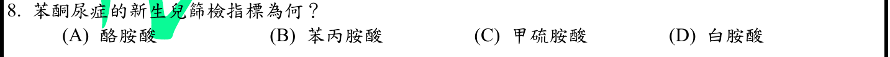
本地原卷PDF23 · 官方混科卷PDF23 · 官方原答案PDF1最下方生物表 · 已核對8/17生物釋疑PDF5下方及6 · 已核對8/19生物PDF34下方及35
官方採計：B 原答案：B
未列本輪取得8/17釋疑PDF5下方及6、8/19第二次會議官方組合PDF34下方及35；依同年答案採計，不宣稱沒有其他未取得公告
主分類：Ch14 Mendel and the Gene Idea
14.4 / Genetic Testing and Counseling
目錄行920；條目起始印刷頁287；實際目錄 PDF38
主分類理由：14.4 / Genetic Testing and Counseling：新生兒PKU篩檢屬遺傳疾病檢測與諮詢，正文289有明確情境。
次分類理由：無另列最小次條目；Phe累積為題中PKU異常指標，篩檢可同測Tyr但不因此改答；剔除過廣Nature and Nurture次目。
科學說明：官方B，篩檢異常重點為血中苯丙胺酸升高。GeneReviews說明乾血點測Phe及Tyr；陽性篩檢需後續確認，不把單次篩檢直接當確診，也不把酪胺酸誤選為題問累積物。
來源涵蓋範圍：Campbell提供列示分類原理；精細生理及原題/版本差異由具名來源補足，實讀與檔案取得範圍見來源紀錄。
教材正文：印刷288／PDF337、印刷289／PDF338
補充來源：S02
另行比較：酪胺酸也測得是否應改成A
Phe累積為題中PKU異常指標，篩檢可同測Tyr但不因此改答；剔除過廣Nature and Nurture次目。
結論：證據確認，分類疑義已解決。完整覆核紀錄
Q09 · 36.3 / Bulk Flow Transport via the Xylem 正式分類
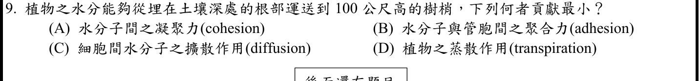
本地原卷PDF23 · 官方混科卷PDF23 · 官方原答案PDF1最下方生物表 · 已核對8/17生物釋疑PDF5下方及6 · 已核對8/19生物PDF34下方及35
官方採計：C 原答案：C
未列本輪取得8/17釋疑PDF5下方及6、8/19第二次會議官方組合PDF34下方及35；依同年答案採計，不宣稱沒有其他未取得公告
主分類：Ch36 Resource Acquisition and Transport in Vascular Plants
36.3 / Bulk Flow Transport via the Xylem
目錄行2381；條目起始印刷頁792；實際目錄 PDF45
次分類：Ch36 Resource Acquisition and Transport in Vascular Plants
36.2 / Long-Distance Transport: The Role of Bulk Flow
目錄行2368；條目起始印刷頁791；實際目錄 PDF45
主分類理由：36.3 / Bulk Flow Transport via the Xylem：百公尺木質部運水依賴蒸散引起的張力與整體流，非靠分子擴散完成長距離運輸。
次分類理由：36.2 / Long-Distance Transport: The Role of Bulk Flow：長距離整體流條目明確區別bulk flow與diffusion。
科學說明：官方C。內聚、對管壁附著及蒸散拉力支持木質部上升水柱，擴散不是此距離輸水的主機制。原題「聚合力」保留，依選項意圖解為附著力；不能推成植物任何部位都不用擴散或滲透。
來源涵蓋範圍：Campbell正文支援分類原理；題設限定、章導論或條目邊界及科學措辭差異逐題保留。
教材正文：印刷791／PDF840、印刷792／PDF841、印刷793／PDF842、印刷794／PDF843、印刷795／PDF844、印刷796／PDF845
補充來源：本題未另列課本外來源
另行比較：凝聚與附著是否能替代蒸散造成長距離水流
791–796支持整體流及張力，擴散貢獻最小C；原題聚合力adhesion文字保存，主次36.3/36.2保留。
結論：證據確認，分類疑義已解決。完整覆核紀錄
Q10 · 48.4 / Neurotransmitters 正式分類
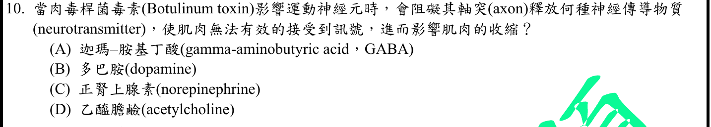
本地原卷PDF24 · 官方混科卷PDF24 · 官方原答案PDF1最下方生物表 · 已核對8/17生物釋疑PDF5下方及6 · 已核對8/19生物PDF34下方及35
官方採計：D 原答案：D
未列本輪取得8/17釋疑PDF5下方及6、8/19第二次會議官方組合PDF34下方及35；依同年答案採計，不宣稱沒有其他未取得公告
主分類：Ch48 Neurons, Synapses, and Signaling
48.4 / Neurotransmitters
目錄行3231；條目起始印刷頁1080；實際目錄 PDF48
主分類理由：48.4 / Neurotransmitters：神經傳遞物質條目1081明載肉毒桿菌毒素抑制乙醯膽鹼釋出。
次分類理由：無另列最小次條目；1081直接點名botulinum及ACh，D確認；不把停止釋出混成回收，移除Termination次目。
科學說明：官方D。神經肌肉接點ACh釋放受阻，肌肉興奮與收縮下降；不是增加ACh清除或直接抑制血清素。毒素作用機制與正常訊息終止不同，因此不另列清除訊息條目。
來源涵蓋範圍：Campbell正文支援分類原理；題設限定、章導論或條目邊界及科學措辭差異逐題保留。
教材正文：印刷1080／PDF1129、印刷1081／PDF1130
補充來源：本題未另列課本外來源
另行比較：毒素阻止釋放是否應歸訊息清除
1081直接點名botulinum及ACh，D確認；不把停止釋出混成回收，移除Termination次目。
結論：證據確認，分類疑義已解決。完整覆核紀錄
Q11 · 48.4 / Termination of Neurotransmitter Signaling 正式分類
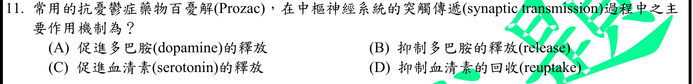
本地原卷PDF24 · 官方混科卷PDF24 · 官方原答案PDF1最下方生物表 · 已核對8/17生物釋疑PDF5下方及6 · 已核對8/19生物PDF34下方及35
官方採計：D 原答案：D
未列本輪取得8/17釋疑PDF5下方及6、8/19第二次會議官方組合PDF34下方及35；依同年答案採計，不宣稱沒有其他未取得公告
主分類：Ch48 Neurons, Synapses, and Signaling
48.4 / Termination of Neurotransmitter Signaling
目錄行3225；條目起始印刷頁1079；實際目錄 PDF48
次分類：Ch49 Nervous Systems
49.5 / Depression
目錄行3306；條目起始印刷頁1102；實際目錄 PDF48
主分類理由：48.4 / Termination of Neurotransmitter Signaling：Prozac抑制突觸前血清素再吸收，核心是神經傳遞訊息的終止與持續時間。
次分類理由：49.5 / Depression：憂鬱症條目提供SSRI治療情境，主分類仍按受問機制。
科學說明：官方D。Fluoxetine為SSRI，阻礙血清素回收而延長其突觸作用；不等同增加每一神經元的血清素合成。FDA2011標示供機制查核，不作現行處方或治療建議。
來源涵蓋範圍：Campbell提供列示分類原理；精細生理及原題/版本差異由具名來源補足，實讀與檔案取得範圍見來源紀錄。
教材正文：印刷1079／PDF1128、印刷1080／PDF1129、印刷1102／PDF1151、印刷1103／PDF1152
補充來源：S03
另行比較：Prozac是否增加血清素釋放而非抑制回收
教材1079–1080及FDA SSRI標示支持D；憂鬱症為情境次目而非取代核心機制。
結論：證據確認，分類疑義已解決。完整覆核紀錄
Q12 · 54.1 / Positive Interactions 正式分類
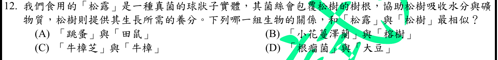
本地原卷PDF24 · 官方混科卷PDF24 · 官方原答案PDF1最下方生物表 · 已核對8/17生物釋疑PDF5下方及6 · 已核對8/19生物PDF34下方及35
官方採計：D 原答案：D
未列本輪取得8/17釋疑PDF5下方及6、8/19第二次會議官方組合PDF34下方及35；依同年答案採計，不宣稱沒有其他未取得公告
主分類：Ch54 Community Ecology
54.1 / Positive Interactions
目錄行3604；條目起始印刷頁1220；實際目錄 PDF50
次分類：Ch37 Soil and Plant Nutrition
37.3 / Fungi and Plant Nutrition
目錄行2466；條目起始印刷頁817；實際目錄 PDF45
次分類：Ch37 Soil and Plant Nutrition
37.3 / Bacteria and Plant Nutrition
目錄行2463；條目起始印刷頁814；實際目錄 PDF45
主分類理由：54.1 / Positive Interactions：題目比較兩物種互利共生，應以群落的正向交互作用為主。
次分類理由：37.3 / Fungi and Plant Nutrition：菌根的真菌與根系交換提供松樹松露情境；37.3 / Bacteria and Plant Nutrition：根瘤細菌固氮與豆科供碳提供正確選項的另一互利例。
科學說明：官方D。題設松露與松樹根的菌根，以及根瘤菌與大豆，都有雙方利益。以教材通則支持題設關係，不聲稱由題目已鑑定松露物種、所有真菌都互利，或豆科自行將N2固定。
來源涵蓋範圍：Campbell正文支援分類原理；題設限定、章導論或條目邊界及科學措辭差異逐題保留。
教材正文：印刷814／PDF863、印刷815／PDF864、印刷816／PDF865、印刷817／PDF866、印刷818／PDF867、印刷1220／PDF1269、印刷1221／PDF1270
補充來源：本題未另列課本外來源
另行比較：真菌及根瘤菌分屬不同分類群是否妨礙互利比較
1220正向互利與816–818兩種根部互利成立；比較交互作用，主54.1並保存37章兩個次目。
結論：證據確認，分類疑義已解決。完整覆核紀錄
Q13 · 42.4 / Blood Composition and Function 正式分類
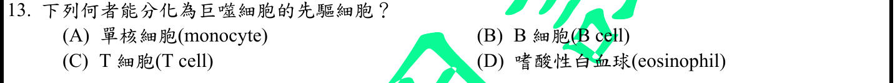
本地原卷PDF24 · 官方混科卷PDF24 · 官方原答案PDF1最下方生物表 · 已核對8/17生物釋疑PDF5下方及6 · 已核對8/19生物PDF34下方及35
官方採計：A 原答案：A
未列本輪取得8/17釋疑PDF5下方及6、8/19第二次會議官方組合PDF34下方及35；依同年答案採計，不宣稱沒有其他未取得公告
主分類：Ch42 Circulation and Gas Exchange
42.4 / Blood Composition and Function
目錄行2802；條目起始印刷頁934；實際目錄 PDF46
次分類：Ch43 The Immune System
43.1 / Innate Immunity of Vertebrates
目錄行2870；條目起始印刷頁954；實際目錄 PDF47
主分類理由：42.4 / Blood Composition and Function：由白血球類型辨認可分化為巨噬細胞者，先按血液細胞組成與血球發生定位。
次分類理由：43.1 / Innate Immunity of Vertebrates：脊椎動物先天免疫說明巨噬細胞的吞噬功能。
科學說明：官方A。單核球離開血液後可成為巨噬細胞，Alberts教材明載此路徑。這不是所有組織常駐巨噬細胞皆源於成人循環單核球的排他說法；Hashimoto等小鼠追蹤研究證明多種常駐巨噬細胞可局部維持。
來源涵蓋範圍：Campbell提供列示分類原理；精細生理及原題/版本差異由具名來源補足，實讀與檔案取得範圍見來源紀錄。
教材正文：印刷935／PDF984、印刷936／PDF985、印刷954／PDF1003、印刷955／PDF1004
補充來源：S04
另行比較：所有巨噬細胞是否必由循環單核球補充
題問能成為而非唯一來源，Alberts支持A，Hashimoto原研究摘要限定小鼠穩態自維持；分類不冒充唯一譜系。
結論：證據確認，分類疑義已解決。完整覆核紀錄
Q14 · 6.7 / Cell Junctions 正式分類
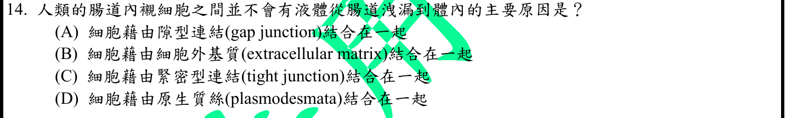
本地原卷PDF24 · 官方混科卷PDF24 · 官方原答案PDF1最下方生物表 · 已核對8/17生物釋疑PDF5下方及6 · 已核對8/19生物PDF34下方及35
官方採計：C 原答案：C
未列本輪取得8/17釋疑PDF5下方及6、8/19第二次會議官方組合PDF34下方及35；依同年答案採計，不宣稱沒有其他未取得公告
主分類：Ch06 A Tour of the Cell
6.7 / Cell Junctions
目錄行394；條目起始印刷頁119；實際目錄 PDF36
主分類理由：6.7 / Cell Junctions：緊密連接封閉相鄰上皮細胞間隙，屬細胞間連接的具體類型。
次分類理由：無另列最小次條目；119–120區分緊密連接與間隙連接，C僅對細胞間屏障；不把選擇性跨細胞運輸排除。
科學說明：官方C。緊密連接限制物質沿細胞間通路洩漏，維持上皮屏障；並非把腸腔與身體的所有跨細胞吸收一律阻斷，也不同於橋粒的機械連結或間隙連接的溝通。
來源涵蓋範圍：Campbell正文支援分類原理；題設限定、章導論或條目邊界及科學措辭差異逐題保留。
教材正文：印刷119／PDF168、印刷120／PDF169
補充來源：本題未另列課本外來源
另行比較：腸液不洩漏是否意味完全禁止營養吸收
119–120區分緊密連接與間隙連接，C僅對細胞間屏障；不把選擇性跨細胞運輸排除。
結論：證據確認，分類疑義已解決。完整覆核紀錄
Q15 · 49.2 / Emotions 正式分類
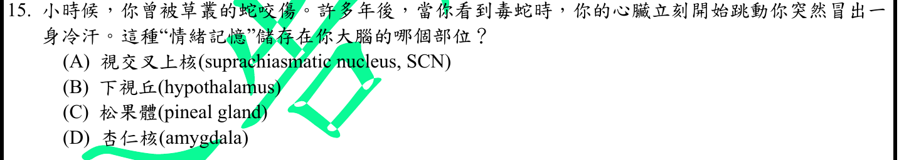
本地原卷PDF24 · 官方混科卷PDF24 · 官方原答案PDF1最下方生物表 · 已核對8/17生物釋疑PDF5下方及6 · 已核對8/19生物PDF34下方及35
官方採計：D 原答案：D
未列本輪取得8/17釋疑PDF5下方及6、8/19第二次會議官方組合PDF34下方及35；依同年答案採計，不宣稱沒有其他未取得公告
主分類：Ch49 Nervous Systems
49.2 / Emotions
目錄行3261；條目起始印刷頁1095；實際目錄 PDF48
主分類理由：49.2 / Emotions：創傷後恐懼相關記憶喚起的杏仁核作用位於情緒條目。
次分類理由：無另列最小次條目；题問記憶位置，1095–1096杏仁核D較直接；已修正草稿火災為實際蛇咬並保存心臟開始跳動不精確措辭。
科學說明：官方D。杏仁核參與情緒記憶與恐懼反應，符合蛇的線索引起反應的題意。原文「心臟立刻開始跳動」不是正常心臟先前停止的證據，科學上應理解為心跳加快等自主反應；不能僅由情境診斷特定疾病。
來源涵蓋範圍：Campbell正文支援分類原理；題設限定、章導論或條目邊界及科學措辭差異逐題保留。
教材正文：印刷1095／PDF1144、印刷1096／PDF1145
補充來源：本題未另列課本外來源
另行比較：下視丘自主反應是否比杏仁核情緒記憶更直接
题問記憶位置，1095–1096杏仁核D較直接；已修正草稿火災為實際蛇咬並保存心臟開始跳動不精確措辭。
結論：證據確認，分類疑義已解決。完整覆核紀錄
Q16 · 12.2 / Cytokinesis: A Closer Look 正式分類
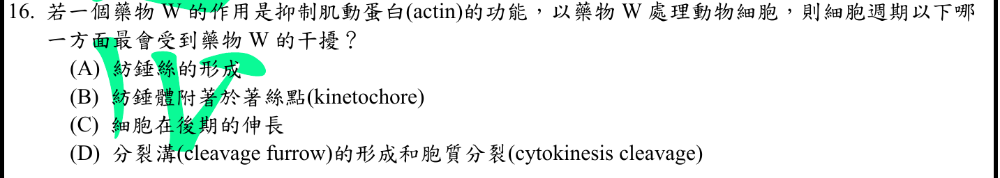
本地原卷PDF24 · 官方混科卷PDF24 · 官方原答案PDF1最下方生物表 · 已核對8/17生物釋疑PDF5下方及6 · 已核對8/19生物PDF34下方及35
官方採計：D 原答案：D
未列本輪取得8/17釋疑PDF5下方及6、8/19第二次會議官方組合PDF34下方及35；依同年答案採計，不宣稱沒有其他未取得公告
主分類：Ch12 The Cell Cycle
12.2 / Cytokinesis: A Closer Look
目錄行776；條目起始印刷頁241；實際目錄 PDF38
次分類：Ch06 A Tour of the Cell
6.6 / Components of the Cytoskeleton
目錄行381；條目起始印刷頁113；實際目錄 PDF36
主分類理由：12.2 / Cytokinesis: A Closer Look：動物細胞分裂溝由肌動蛋白微絲與肌凝蛋白環收縮完成，受抑制時影響胞質分裂。
次分類理由：6.6 / Components of the Cytoskeleton：細胞骨架組成提供actin微絲與微管功能區別。
科學說明：官方D。肌動蛋白參與分裂溝收縮，紡錘體及染色體移動主要涉及微管，非同一骨架系統。原題kinetochore應稱動粒，與著絲點DNA區域關聯但不是完全同義，原題用字保留。
來源涵蓋範圍：Campbell正文支援分類原理；題設限定、章導論或條目邊界及科學措辭差異逐題保留。
教材正文：印刷116／PDF165、印刷117／PDF166、印刷241／PDF290、印刷242／PDF291
補充來源：本題未另列課本外來源
另行比較：後期細胞伸長或動粒附著是否主要依actin
241分裂溝最直接，116–117区分微絲與微管；D確認，kinetochore譯名差異不改題。
結論：證據確認，分類疑義已解決。完整覆核紀錄
Q17 · 18.2 / Mechanisms of Post-transcriptional Regulation 正式分類
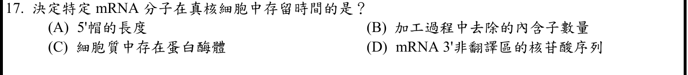
本地原卷PDF24 · 官方混科卷PDF24 · 官方原答案PDF1最下方生物表 · 釋疑PDF5 · 8/19第二次會議PDF34
官方採計：D 原答案：D
8/17及8/19第二次會議兩版生物釋疑均維持原答案D
主分類：Ch18 Regulation of Gene Expression
18.2 / Mechanisms of Post-transcriptional Regulation
目錄行1129；條目起始印刷頁377；實際目錄 PDF39
次分類：Ch17 Gene Expression: From Gene to Protein
17.3 / Alteration of mRNA Ends
目錄行1059；條目起始印刷頁345；實際目錄 PDF39
主分類理由：18.2 / Mechanisms of Post-transcriptional Regulation：mRNA穩定性屬轉錄後調控，379明示3′端非轉譯區序列影響壽命。
次分類理由：17.3 / Alteration of mRNA Ends：mRNA末端加工說明5′帽與poly-A尾也能保護mRNA，支持排除題中不精確選項。
科學說明：官方D，兩版釋疑維持。3′UTR的特定序列可影響降解速度；官方引11版376，本地12版相關正文為378–379，頁碼不可直接照搬。5′帽存在與去帽亦影響穩定性，但選項A說帽「長度」，不能據此改答；多個因素可共同調控。
來源涵蓋範圍：Campbell正文支援分類原理；題設限定、章導論或條目邊界及科學措辭差異逐題保留。
教材正文：印刷345／PDF394、印刷377／PDF426、印刷378／PDF427、印刷379／PDF428
補充來源：本題未另列課本外來源
另行比較：5′帽保護mRNA是否讓選項A同樣正確
A問帽長度而非有無，379直接證實3′UTR序列，D和同年釋疑一致；11版376與12版379分存。
結論：證據確認，分類疑義已解決。完整覆核紀錄
Q18 · 38.3 / Plant Biotechnology and Genetic Engineering 正式分類
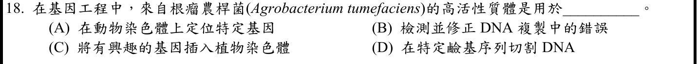
本地原卷PDF25 · 官方混科卷PDF25 · 官方原答案PDF1最下方生物表 · 已核對8/17生物釋疑PDF5下方及6 · 已核對8/19生物PDF34下方及35
官方採計：C 原答案：C
未列本輪取得8/17釋疑PDF5下方及6、8/19第二次會議官方組合PDF34下方及35；依同年答案採計，不宣稱沒有其他未取得公告
主分類：Ch38 Angiosperm Reproduction and Biotechnology
38.3 / Plant Biotechnology and Genetic Engineering
目錄行2527；條目起始印刷頁837；實際目錄 PDF45
主分類理由：38.3 / Plant Biotechnology and Genetic Engineering：以外源基因導入植物取得轉殖性狀，最接近植物生物技術與基因工程條目。
次分類理由：無另列最小次條目；Bevan摘要明示邊界及vir促進核基因組轉移；C確認，Campbell植物工程作分類框架，細節不假稱來自該書。
科學說明：官方C。Campbell837–839提供植物基因工程概念；Ti系統細節另用Bevan1984原始研究摘要，vir基因可促進邊界間T-DNA進入植物核基因組。整合的是轉移區段，不是整個細菌質體必然插入；原題「高活性質體」用語不當作技術標準名稱。
來源涵蓋範圍：Campbell提供列示分類原理；精細生理及原題/版本差異由具名來源補足，實讀與檔案取得範圍見來源紀錄。
教材正文：印刷837／PDF886、印刷838／PDF887、印刷839／PDF888
補充來源：S05
另行比較：Ti整個質體或只有T-DNA插入
Bevan摘要明示邊界及vir促進核基因組轉移；C確認，Campbell植物工程作分類框架，細節不假稱來自該書。
結論：證據確認，分類疑義已解決。完整覆核紀錄
Q19 · 21.4 / Transposable Elements and Related Sequences 正式分類
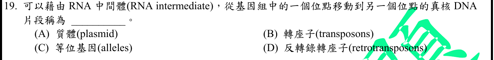
本地原卷PDF25 · 官方混科卷PDF25 · 官方原答案PDF1最下方生物表 · 已核對8/17生物釋疑PDF5下方及6 · 已核對8/19生物PDF34下方及35
官方採計：D 原答案：D
未列本輪取得8/17釋疑PDF5下方及6、8/19第二次會議官方組合PDF34下方及35；依同年答案採計，不宣稱沒有其他未取得公告
主分類：Ch21 Genomes and Their Evolution
21.4 / Transposable Elements and Related Sequences
目錄行1327；條目起始印刷頁451；實際目錄 PDF40
主分類理由：21.4 / Transposable Elements and Related Sequences：經RNA中間物並反轉錄形成DNA的新拷貝，是反轉錄轉位子機制。
次分類理由：無另列最小次條目；451–452機制以RNA中間物指定D；轉位大類包含關係不能抹去本題具體受問類型。
科學說明：官方D。retrotransposon以RNA為中間物；transposable element是上位廣稱，不能因涵蓋反轉錄轉位子便取代本題要求最具體機制的D。一般DNA轉位子不以這條RNA路徑定義。
來源涵蓋範圍：Campbell正文支援分類原理；題設限定、章導論或條目邊界及科學措辭差異逐題保留。
教材正文：印刷451／PDF500、印刷452／PDF501
補充來源：本題未另列課本外來源
另行比較：transposons上位概念能否取代retrotransposons
451–452機制以RNA中間物指定D；轉位大類包含關係不能抹去本題具體受問類型。
結論：證據確認，分類疑義已解決。完整覆核紀錄
Q20 · 21.3 / Gene Density and Noncoding DNA 正式分類
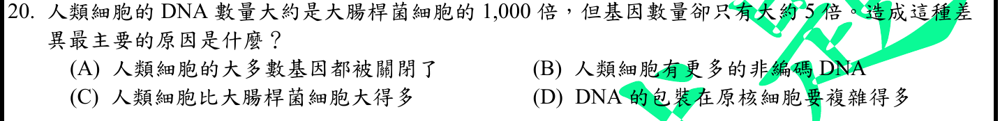
本地原卷PDF25 · 官方混科卷PDF25 · 官方原答案PDF1最下方生物表 · 已核對8/17生物釋疑PDF5下方及6 · 已核對8/19生物PDF34下方及35
官方採計：B 原答案：B
未列本輪取得8/17釋疑PDF5下方及6、8/19第二次會議官方組合PDF34下方及35；依同年答案採計，不宣稱沒有其他未取得公告
主分類：Ch21 Genomes and Their Evolution
21.3 / Gene Density and Noncoding DNA
目錄行1320；條目起始印刷頁449；實際目錄 PDF40
次分類：Ch21 Genomes and Their Evolution
21.3 / Number of Genes
目錄行1317；條目起始印刷頁449；實際目錄 PDF40
主分類理由：21.3 / Gene Density and Noncoding DNA：基因組體積與基因數量不成比例，關鍵在人類非編碼DNA比例與基因密度。
次分類理由：21.3 / Number of Genes：基因數量條目提供細菌與人類基因數的比較框架。
科學說明：官方B。人類大量DNA不編碼蛋白質，包括調控區、內含子與重複序列等；不能把所有非編碼DNA等同無功能。題中1000倍與5倍是概略比較，取決物種及計算基準，不視為各版本固定精確比值。
來源涵蓋範圍：Campbell正文支援分類原理；題設限定、章導論或條目邊界及科學措辭差異逐題保留。
教材正文：印刷449／PDF498、印刷450／PDF499、印刷451／PDF500
補充來源：本題未另列課本外來源
另行比較：基因關閉是否使細胞DNA本身更多
基因表現開關不直接增加總DNA，449–451非編碼比例支持B；相對倍數當題設近似。
結論：證據確認，分類疑義已解決。完整覆核紀錄
Q21 · 24.1 / The Biological Species Concept 正式分類
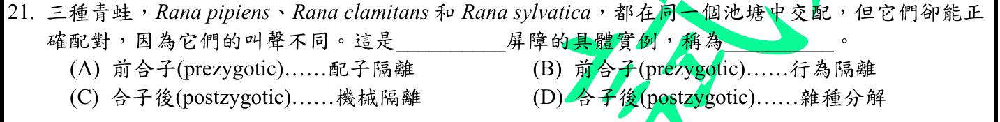
本地原卷PDF25 · 官方混科卷PDF25 · 官方原答案PDF1最下方生物表 · 已核對8/17生物釋疑PDF5下方及6 · 已核對8/19生物PDF34下方及35
官方採計：B 原答案：B
未列本輪取得8/17釋疑PDF5下方及6、8/19第二次會議官方組合PDF34下方及35；依同年答案採計，不宣稱沒有其他未取得公告
主分類：Ch24 The Origin of Species
24.1 / The Biological Species Concept
目錄行1488；條目起始印刷頁507；實際目錄 PDF41
主分類理由：24.1 / The Biological Species Concept：不同鳴叫阻止交配屬於生物種概念下的合子前生殖隔離，圖508列行為隔離。
次分類理由：無另列最小次條目；508行為隔離發生受精前，B；依真實Biological Species Concept葉目，不虛構更細TOC條目。
科學說明：官方B。依題設，求偶訊號不同使配偶無法辨認，受精前便降低交配；不必先有合子不活或雜種不育。不另造目錄不存在的Behavioral Isolation葉節點，也不由題設推斷野外完全無基因流。
來源涵蓋範圍：Campbell正文支援分類原理；題設限定、章導論或條目邊界及科學措辭差異逐題保留。
教材正文：印刷507／PDF556、印刷508／PDF557、印刷509／PDF558
補充來源：本題未另列課本外來源
另行比較：同池塘叫聲差異是否屬機械或配子隔離
508行為隔離發生受精前，B；依真實Biological Species Concept葉目，不虛構更細TOC條目。
結論：證據確認，分類疑義已解決。完整覆核紀錄
Q22 · 26.2 / Sorting Homology from Analogy 正式分類
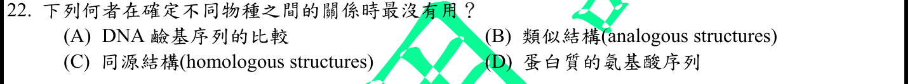
本地原卷PDF25 · 官方混科卷PDF25 · 官方原答案PDF1最下方生物表 · 已核對8/17生物釋疑PDF5下方及6 · 已核對8/19生物PDF34下方及35
官方採計：B 原答案：B
未列本輪取得8/17釋疑PDF5下方及6、8/19第二次會議官方組合PDF34下方及35；依同年答案採計，不宣稱沒有其他未取得公告
主分類：Ch26 Phylogeny and the Tree of Life
26.2 / Sorting Homology from Analogy
目錄行1649；條目起始印刷頁558；實際目錄 PDF42
次分類：Ch26 Phylogeny and the Tree of Life
26.2 / Morphological and Molecular Homologies
目錄行1646；條目起始印刷頁558；實際目錄 PDF42
主分類理由：26.2 / Sorting Homology from Analogy：建構演化親緣時須排除由趨同造成的相似，考點是區分同源與同功。
次分類理由：26.2 / Morphological and Molecular Homologies：形態與分子同源性提供可支持共同祖先的對照證據。
科學說明：官方B。同功構造可因相似選汰壓力獨立演化，所以單以功能相似判定近親最不可靠；同源特徵仍須考慮共享衍徵、祖徵與其他資料，不宣稱任何同源特徵都能單獨解析每個分支。
來源涵蓋範圍：Campbell正文支援分類原理；題設限定、章導論或條目邊界及科學措辭差異逐題保留。
教材正文：印刷558／PDF607、印刷559／PDF608
補充來源：本題未另列課本外來源
Q23 · 33.3 / Molluscs 正式分類
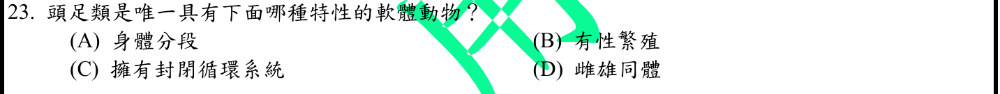
本地原卷PDF25 · 官方混科卷PDF25 · 官方原答案PDF1最下方生物表 · 已核對8/17生物釋疑PDF5下方及6 · 已核對8/19生物PDF34下方及35
官方採計：C 原答案：C
未列本輪取得8/17釋疑PDF5下方及6、8/19第二次會議官方組合PDF34下方及35；依同年答案採計，不宣稱沒有其他未取得公告
主分類：Ch33 An Introduction to Invertebrates
33.3 / Molluscs
目錄行2120；條目起始印刷頁699；實際目錄 PDF44
次分類：Ch42 Circulation and Gas Exchange
42.1 / Open and Closed Circulatory Systems
目錄行2760；條目起始印刷頁923；實際目錄 PDF46
主分類理由：33.3 / Molluscs：軟體動物中頭足類的循環系統特例在Molluscs正文702，目錄未另列Cephalopods葉目。
次分類理由：42.1 / Open and Closed Circulatory Systems：開放及封閉循環系統界定血液是否全程保留在血管內。
科學說明：官方C。頭足類為本題軟體動物選項中的封閉循環例，其較活躍運動與有效循環相關；不把所有軟體動物或所有無脊椎動物都列為封閉循環。
來源涵蓋範圍：Campbell正文支援分類原理；題設限定、章導論或條目邊界及科學措辭差異逐題保留。
教材正文：印刷699／PDF748、印刷700／PDF749、印刷701／PDF750、印刷702／PDF751、印刷703／PDF752、印刷923／PDF972
補充來源：本題未另列課本外來源
另行比較：頭足類是否獨有有性生殖或分節
702頭足類封閉循環加923循環定義支持C，其他選項非其唯一軟體動物特徵；無Cephalopods目錄葉目故用Molluscs。
結論：證據確認，分類疑義已解決。完整覆核紀錄
Q24 · 34.7 / Bipedalism 正式分類
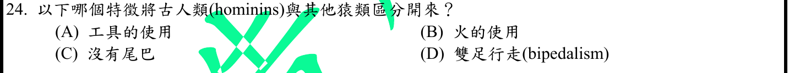
本地原卷PDF25 · 官方混科卷PDF25 · 官方原答案PDF1最下方生物表 · 已核對8/17生物釋疑PDF5下方及6 · 已核對8/19生物PDF34下方及35
官方採計：D 原答案：D
未列本輪取得8/17釋疑PDF5下方及6、8/19第二次會議官方組合PDF34下方及35；依同年答案採計，不宣稱沒有其他未取得公告
主分類：Ch34 The Origin and Evolution of Vertebrates
34.7 / Bipedalism
目錄行2253；條目起始印刷頁750；實際目錄 PDF44
主分類理由：34.7 / Bipedalism：人族演化的重要形態轉變是習慣性雙足直立行走。
次分類理由：無另列最小次條目；750雙足行走D符合人族典型，其他猿亦無尾/可用工具；主Bipedalism且不杜撰絕對只人族能兩足。
科學說明：官方D。教材750討論雙足行走早於大腦明顯增大；使用火、語言與某類工具不適合作為所有早期人族共同的最早特徵。此處指習慣性行走與骨骼適應，不是否認其他猿能短暫兩足移動。
來源涵蓋範圍：Campbell正文支援分類原理；題設限定、章導論或條目邊界及科學措辭差異逐題保留。
教材正文：印刷748／PDF797、印刷749／PDF798、印刷750／PDF799
補充來源：本題未另列課本外來源
另行比較：使用工具或無尾是否足以區別所有人族與其他猿
750雙足行走D符合人族典型，其他猿亦無尾/可用工具；主Bipedalism且不杜撰絕對只人族能兩足。
結論：證據確認，分類疑義已解決。完整覆核紀錄
Q25 · 44.1 / Transport Epithelia in Osmoregulation 正式分類
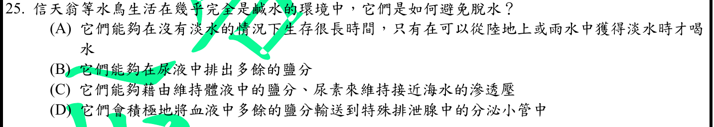
本地原卷PDF25 · 官方混科卷PDF25 · 官方原答案PDF1最下方生物表 · 已核對8/17生物釋疑PDF5下方及6 · 已核對8/19生物PDF34下方及35
官方採計：D 原答案：D
未列本輪取得8/17釋疑PDF5下方及6、8/19第二次會議官方組合PDF34下方及35；依同年答案採計，不宣稱沒有其他未取得公告
主分類：Ch44 Osmoregulation and Excretion
44.1 / Transport Epithelia in Osmoregulation
目錄行2950；條目起始印刷頁981；實際目錄 PDF47
主分類理由：44.1 / Transport Epithelia in Osmoregulation：信天翁鹽腺的運輸上皮主動移出鹽，直接對應調節鹽水的上皮機制。
次分類理由：無另列最小次條目；982鹽腺運輸上皮直接支持D，C不適合海鳥；不是單純靠腎尿排出全部鹽。
科學說明：官方D。鼻部鹽腺使鹽分濃縮排出，能減少為排鹽而流失的水；海鳥並不是體液與海水等滲的滲透順應者。原題的生活情境保留，不解成鹽腺可以創造水。
來源涵蓋範圍：Campbell正文支援分類原理；題設限定、章導論或條目邊界及科學措辭差異逐題保留。
教材正文：印刷979／PDF1028、印刷981／PDF1030、印刷982／PDF1031
補充來源：本題未另列課本外來源
另行比較：海鳥能否像軟骨魚提高尿素近海水滲透壓
982鹽腺運輸上皮直接支持D，C不適合海鳥；不是單純靠腎尿排出全部鹽。
結論：證據確認，分類疑義已解決。完整覆核紀錄
Q26 · 47.2 / Gastrulation 正式分類
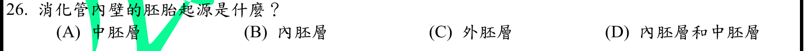
本地原卷PDF25 · 官方混科卷PDF25 · 官方原答案PDF1最下方生物表 · 釋疑PDF5 · 8/19第二次會議PDF34
官方採計：B 原答案：B
8/17及8/19第二次會議兩版生物釋疑均維持原答案B
主分類：Ch47 Animal Development
47.2 / Gastrulation
目錄行3144；條目起始印刷頁1049；實際目錄 PDF48
主分類理由：47.2 / Gastrulation：原腸形成建立三胚層，表1051將消化道上皮列在內胚層衍生物。
次分類理由：無另列最小次條目；1051表與兩版官方釋疑將所指內襯解為上皮，B；肌肉結締組織另有來源，保留題文內壁語意界線。
科學說明：官方B，兩版釋疑維持。受問的消化道內襯上皮主要出自內胚層，不能把整個腸壁平滑肌及結締組織也歸入內胚層。官方引11版1047，本地12版應查1051，不混用印刷與PDF頁碼。
來源涵蓋範圍：Campbell正文支援分類原理；題設限定、章導論或條目邊界及科學措辭差異逐題保留。
教材正文：印刷1049／PDF1098、印刷1050／PDF1099、印刷1051／PDF1100、印刷1052／PDF1101
補充來源：本題未另列課本外來源
另行比較：消化管內壁是否應將整面腸壁歸中胚層加內胚層
1051表與兩版官方釋疑將所指內襯解為上皮，B；肌肉結締組織另有來源，保留題文內壁語意界線。
結論：證據確認，分類疑義已解決。完整覆核紀錄
Q27 · 47.2 / Gastrulation 正式分類
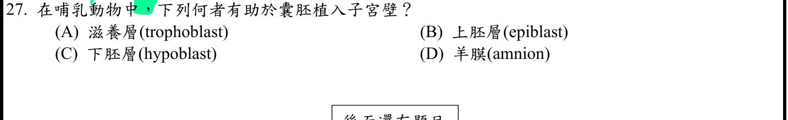
本地原卷PDF25 · 官方混科卷PDF25 · 官方原答案PDF1最下方生物表 · 已核對8/17生物釋疑PDF5下方及6 · 已核對8/19生物PDF34下方及35
官方採計：A 原答案：A
未列本輪取得8/17釋疑PDF5下方及6、8/19第二次會議官方組合PDF34下方及35；依同年答案採計，不宣稱沒有其他未取得公告
主分類：Ch47 Animal Development
47.2 / Gastrulation
目錄行3144；條目起始印刷頁1049；實際目錄 PDF48
主分類理由：47.2 / Gastrulation：滋養層啟動著床的敘述及圖47.12位於Gastrulation正文1052與1053左欄，按實際最小目錄歸檔。
次分類理由：無另列最小次條目；1052右欄與1053左圖直接載滋養層，主改Gastrulation；正文涵蓋早期流程不表示著床就是原腸運動。
科學說明：官方A。囊胚外層滋養層促進植入子宮內膜，內細胞群主要形成胚體。著床在真正原腸運動之前；本書此條目用連續發育圖交代先行階段，分類位置不表示兩事件發生時間相同。
來源涵蓋範圍：Campbell正文支援分類原理；題設限定、章導論或條目邊界及科學措辭差異逐題保留。
教材正文：印刷1052／PDF1101、印刷1053／PDF1102
補充來源：本題未另列課本外來源
另行比較：著床應放羊膜適應還是原腸形成所在目錄
1052右欄與1053左圖直接載滋養層，主改Gastrulation；正文涵蓋早期流程不表示著床就是原腸運動。
結論：證據確認，分類疑義已解決。完整覆核紀錄
Q28 · 49.4 / Memory and Learning 正式分類
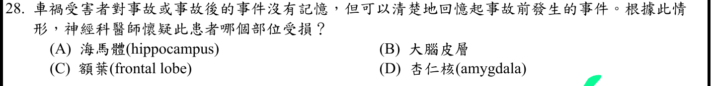
本地原卷PDF26 · 官方混科卷PDF26 · 官方原答案PDF1最下方生物表 · 釋疑PDF6 · 8/19第二次會議PDF35
官方採計：A 原答案：A
8/17及8/19第二次會議兩版生物釋疑均維持原答案A
主分類：Ch49 Nervous Systems
49.4 / Memory and Learning
目錄行3293；條目起始印刷頁1100；實際目錄 PDF48
主分類理由：49.4 / Memory and Learning：海馬迴對新持久記憶形成的作用由Memory and Learning1100–1101直接支持。
次分類理由：無另列最小次條目；1100–1101聚焦新持久記憶，A維持；官方較廣短期說法保留為範圍差異，不用寬敘述否定分類。
科學說明：官方A，兩版釋疑維持。海馬迴損傷可造成形成新長期陳述記憶的障礙。官方「新短期與長期記憶無法產生」措辭較廣，不能推成所有短暫工作記憶或技能學習均消失；分類按題中記憶形成機制。
來源涵蓋範圍：Campbell正文支援分類原理；題設限定、章導論或條目邊界及科學措辭差異逐題保留。
教材正文：印刷1100／PDF1149、印刷1101／PDF1150
補充來源：本題未另列課本外來源
另行比較：海馬損傷是否連所有短期記憶與技能也全失
1100–1101聚焦新持久記憶，A維持；官方較廣短期說法保留為範圍差異，不用寬敘述否定分類。
結論：證據確認，分類疑義已解決。完整覆核紀錄
Q29 · 50.5 / Other Types of Muscle 正式分類
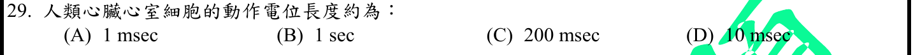
本地原卷PDF26 · 官方混科卷PDF26 · 官方原答案PDF1最下方生物表 · 已核對8/17生物釋疑PDF5下方及6 · 已核對8/19生物PDF34下方及35
官方採計：C 原答案：C
未列本輪取得8/17釋疑PDF5下方及6、8/19第二次會議官方組合PDF34下方及35；依同年答案採計，不宣稱沒有其他未取得公告
主分類：Ch50 Sensory and Motor Mechanisms
50.5 / Other Types of Muscle
目錄行3384；條目起始印刷頁1131；實際目錄 PDF49
次分類：Ch42 Circulation and Gas Exchange
42.2 / Maintaining the Heart’s Rhythmic Beat
文字TOC題名與本地PDF實際題名不同；以本輪PDF目錄真實題名為準，原文字TOC不改。 目錄行2776；條目起始印刷頁928；實際目錄 PDF46
主分類理由：50.5 / Other Types of Muscle：比較心肌動作電位較長的特性，Other Types of Muscle正文1131直接說明心肌與骨骼肌差異。
次分類理由：42.2 / Maintaining the Heart’s Rhythmic Beat：心臟節律條目補充心肌電訊號與搏動關係。
科學說明：官方C，約200毫秒是四個選項中符合心室肌量級者。Campbell僅給較長的定性敘述，200–400ms範圍由Klabunde具名教材補足；時長隨心率、細胞及狀態改變，不能當全體心室細胞固定200ms。
來源涵蓋範圍：Campbell提供列示分類原理；精細生理及原題/版本差異由具名來源補足，實讀與檔案取得範圍見來源紀錄。
教材正文：印刷928／PDF977、印刷929／PDF978、印刷1131／PDF1180、印刷1132／PDF1181
補充來源：S06
另行比較：主分類用節律產生還是心肌動作電位特性
1131心肌比較最直接，主Other Types of Muscle，Heart Rhythmic Beat次目；具名生理教材補數值，C為合理量級。
結論：證據確認，分類疑義已解決。完整覆核紀錄
Q30 · 49.1 / The Peripheral Nervous System 正式分類
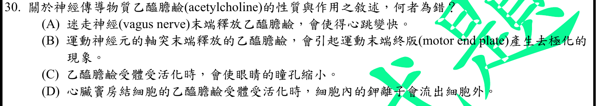
本地原卷PDF26 · 官方混科卷PDF26 · 官方原答案PDF1最下方生物表 · 已核對8/17生物釋疑PDF5下方及6 · 已核對8/19生物PDF34下方及35
官方採計：A 原答案：A
未列本輪取得8/17釋疑PDF5下方及6、8/19第二次會議官方組合PDF34下方及35；依同年答案採計，不宣稱沒有其他未取得公告
主分類：Ch49 Nervous Systems
49.1 / The Peripheral Nervous System
目錄行3245；條目起始印刷頁1088；實際目錄 PDF48
次分類：Ch48 Neurons, Synapses, and Signaling
48.4 / Neurotransmitters
目錄行3231；條目起始印刷頁1080；實際目錄 PDF48
主分類理由：49.1 / The Peripheral Nervous System：副交感迷走神經調節心率，核心是周邊自主神經系統。
次分類理由：48.4 / Neurotransmitters：ACh在不同受體上可興奮或抑制，心臟效應屬抑制性例。
科學說明：官方A為不正確敘述。迷走神經ACh通常降低節律細胞放電與心率；透過G蛋白路徑可增加K通透及抑制腺苷酸環化酶。不能將骨骼肌菸鹼型ACh受體的興奮效應直接套到心臟毒蕈鹼型受體。
來源涵蓋範圍：Campbell正文支援分類原理；題設限定、章導論或條目邊界及科學措辭差異逐題保留。
教材正文：印刷928／PDF977、印刷929／PDF978、印刷1080／PDF1129、印刷1081／PDF1130、印刷1088／PDF1137、印刷1089／PDF1138
補充來源：本題未另列課本外來源
另行比較：ACh是否在所有靶細胞都是興奮性
1080與1089分心臟副交感及骨骼肌受體；A心跳變快為錯。竇房結K外流與眼瞳孔縮小不與此矛盾。
結論：證據確認，分類疑義已解決。完整覆核紀錄
Q31 · 42.2 / The Mammalian Heart: A Closer Look 正式分類
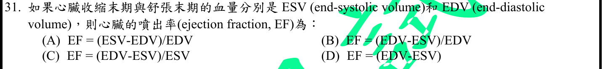
本地原卷PDF26 · 官方混科卷PDF26 · 官方原答案PDF1最下方生物表 · 已核對8/17生物釋疑PDF5下方及6 · 已核對8/19生物PDF34下方及35
官方採計：B 原答案：B
未列本輪取得8/17釋疑PDF5下方及6、8/19第二次會議官方組合PDF34下方及35；依同年答案採計，不宣稱沒有其他未取得公告
主分類：Ch42 Circulation and Gas Exchange
42.2 / The Mammalian Heart: A Closer Look
目錄行2773；條目起始印刷頁926；實際目錄 PDF46
主分類理由：42.2 / The Mammalian Heart: A Closer Look：噴出率連結心室舒縮與每搏量，主條目是哺乳類心臟的循環週期。
次分類理由：無另列最小次條目；獨立計算(120−50)/120＝7/12＝58.33%，B；D是有體積單位的SV，非分率。
科學說明：官方B。EF＝(EDV−ESV)/EDV；若以百分比呈現再乘100%。Klabunde教材明列EF＝SV/EDV，Campbell927支持SV與心室收縮。例EDV120、ESV50mL得70/120＝0.5833，即58.33%，分母不是ESV。
來源涵蓋範圍：Campbell提供列示分類原理；精細生理及原題/版本差異由具名來源補足，實讀與檔案取得範圍見來源紀錄。
教材正文：印刷926／PDF975、印刷927／PDF976、印刷928／PDF977
補充來源：S07
另行比較：分母ESV或僅EDV減ESV是否也為EF
獨立計算(120−50)/120＝7/12＝58.33%，B；D是有體積單位的SV，非分率。
結論：證據確認，分類疑義已解決。完整覆核紀錄
Q32 · 49.1 / The Peripheral Nervous System 正式分類
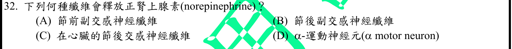
本地原卷PDF26 · 官方混科卷PDF26 · 官方原答案PDF1最下方生物表 · 已核對8/17生物釋疑PDF5下方及6 · 已核對8/19生物PDF34下方及35
官方採計：C 原答案：C
未列本輪取得8/17釋疑PDF5下方及6、8/19第二次會議官方組合PDF34下方及35；依同年答案採計，不宣稱沒有其他未取得公告
主分類：Ch49 Nervous Systems
49.1 / The Peripheral Nervous System
目錄行3245；條目起始印刷頁1088；實際目錄 PDF48
主分類理由：49.1 / The Peripheral Nervous System：交感節後纖維對心臟的神經傳遞，屬周邊自主神經的輸出。
次分類理由：無另列最小次條目；1089交感到心臟的節後C，其他題列路徑典型ACh；scope鎖定心臟，不作所有節後絕對化。
科學說明：官方C，心臟交感節後末梢主要釋出正腎上腺素。此為心臟題設，不能擴寫成所有交感節後神經絕無ACh等例外，也不混淆腎上腺髓質向血液分泌的荷爾蒙。
來源涵蓋範圍：Campbell正文支援分類原理；題設限定、章導論或條目邊界及科學措辭差異逐題保留。
教材正文：印刷1088／PDF1137、印刷1089／PDF1138
補充來源：本題未另列課本外來源
另行比較：節前自主神經或α運動神經是否也釋NE
1089交感到心臟的節後C，其他題列路徑典型ACh；scope鎖定心臟，不作所有節後絕對化。
結論：證據確認，分類疑義已解決。完整覆核紀錄
Q33 · 11.3 / Small Molecules and Ions as Second Messengers 正式分類
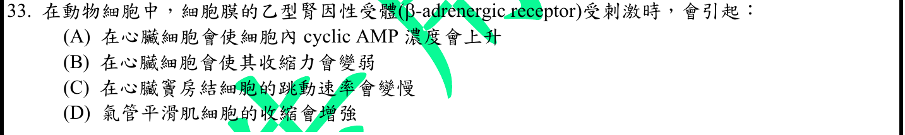
本地原卷PDF26 · 官方混科卷PDF26 · 官方原答案PDF1最下方生物表 · 已核對8/17生物釋疑PDF5下方及6 · 已核對8/19生物PDF34下方及35
官方採計：A 原答案：A
未列本輪取得8/17釋疑PDF5下方及6、8/19第二次會議官方組合PDF34下方及35；依同年答案採計，不宣稱沒有其他未取得公告
主分類：Ch11 Cell Communication
11.3 / Small Molecules and Ions as Second Messengers
文字TOC題名與本地PDF實際題名不同；以本輪PDF目錄真實題名為準，原文字TOC不改。 目錄行724；條目起始印刷頁223；實際目錄 PDF38
次分類：Ch11 Cell Communication
11.2 / Receptors in the Plasma Membrane
目錄行708；條目起始印刷頁217；實際目錄 PDF38
主分類理由：11.3 / Small Molecules and Ions as Second Messengers：β腎上腺素受體活化Gs與腺苷酸環化酶，提高cAMP第二訊使。
次分類理由：11.2 / Receptors in the Plasma Membrane：細胞膜受體條目提供G蛋白偶聯受體的上游路徑。
科學說明：官方A。心臟β受體刺激可使cAMP及PKA訊號增加；本地TOC文字漏了Ions，採真實PDF目錄題名Small Molecules and Ions as Second Messengers。原題中文「乙型腎因性受體」保留，依英文β adrenergic receptor解為β腎上腺素受體，不當成另一種受體。
來源涵蓋範圍：Campbell提供列示分類原理；精細生理及原題/版本差異由具名來源補足，實讀與檔案取得範圍見來源紀錄。
教材正文：印刷217／PDF266、印刷218／PDF267、印刷219／PDF268、印刷223／PDF272、印刷224／PDF273、印刷225／PDF274
補充來源：S08
另行比較：β受體作用是否使心臟收縮減弱或氣管收縮加強
原圖確認中文乙型腎因性與英文β-adrenergic，223 cAMP和Klabunde心臟段支持A；PDF真目錄Ions補正別名。
結論：證據確認，分類疑義已解決。完整覆核紀錄
Q34 · 43.3 / B Cells and Antibodies: A Response to Extracellular Pathogens 正式分類
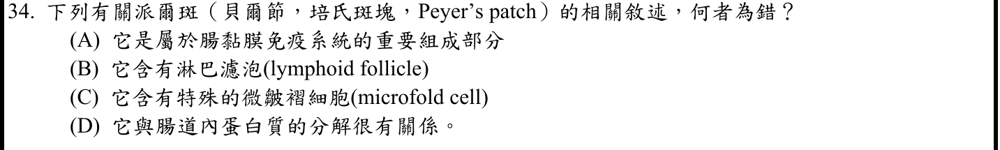
本地原卷PDF26 · 官方混科卷PDF26 · 官方原答案PDF1最下方生物表 · 已核對8/17生物釋疑PDF5下方及6 · 已核對8/19生物PDF34下方及35
官方採計：D 原答案：D
未列本輪取得8/17釋疑PDF5下方及6、8/19第二次會議官方組合PDF34下方及35；依同年答案採計，不宣稱沒有其他未取得公告
主分類：Ch43 The Immune System
43.3 / B Cells and Antibodies: A Response to Extracellular Pathogens
目錄行2899；條目起始印刷頁964；實際目錄 PDF47
主分類理由：43.3 / B Cells and Antibodies: A Response to Extracellular Pathogens：派爾斑是腸黏膜淋巴組織，最接近B細胞抗體與黏膜IgA的最小條目；細部構造以Janeway補足。
次分類理由：無另列最小次條目；Janeway10-13明確区分黏膜免疫與消化，錯D；Campbell最小條目只負責分類框架且範圍透明。
科學說明：官方D為錯誤敘述。Peyer’s patches含淋巴濾泡，相關M細胞將腸腔抗原轉運給下方免疫細胞，參與黏膜防禦，不以消化蛋白質為功能。Campbell966提供IgA保護黏膜的框架，未假稱其中直接列出派爾斑全部構造；M細胞轉運亦不等同專業抗原呈現細胞。
來源涵蓋範圍：Campbell提供列示分類原理；精細生理及原題/版本差異由具名來源補足，實讀與檔案取得範圍見來源紀錄。
教材正文：印刷964／PDF1013、印刷965／PDF1014、印刷966／PDF1015、印刷968／PDF1017
補充來源：S09
另行比較：M細胞、濾泡與蛋白質消化是否皆派爾斑功能
Janeway10-13明確区分黏膜免疫與消化，錯D；Campbell最小條目只負責分類框架且範圍透明。
結論：證據確認，分類疑義已解決。完整覆核紀錄
Q35 · 45.3 / Parathyroid Hormone and Vitamin D: Control of Blood Calcium 正式分類
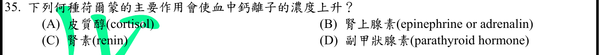
本地原卷PDF26 · 官方混科卷PDF26 · 官方原答案PDF1最下方生物表 · 已核對8/17生物釋疑PDF5下方及6 · 已核對8/19生物PDF34下方及35
官方採計：D 原答案：D
未列本輪取得8/17釋疑PDF5下方及6、8/19第二次會議官方組合PDF34下方及35；依同年答案採計，不宣稱沒有其他未取得公告
主分類：Ch45 Hormones and the Endocrine System
45.3 / Parathyroid Hormone and Vitamin D: Control of Blood Calcium
目錄行3036；條目起始印刷頁1011；實際目錄 PDF47
主分類理由：45.3 / Parathyroid Hormone and Vitamin D: Control of Blood Calcium：副甲狀腺素與維生素D條目直接處理血鈣的負回饋調控。
次分類理由：無另列最小次條目；1011–1012鈣恆定直接支持PTH D，選擇最小命名條目而非泛內分泌總章。
科學說明：官方D。PTH整合骨、腎與活性維生素D相關作用以提高血鈣；不能把PTH誤寫成降低血鈣的降鈣素，也不是只靠單一器官作用。
來源涵蓋範圍：Campbell正文支援分類原理；題設限定、章導論或條目邊界及科學措辭差異逐題保留。
教材正文：印刷1011／PDF1060、印刷1012／PDF1061
補充來源：本題未另列課本外來源
另行比較：腎素或皮質醇是否主要直接提高血鈣
1011–1012鈣恆定直接支持PTH D，選擇最小命名條目而非泛內分泌總章。
結論：證據確認，分類疑義已解決。完整覆核紀錄
Q36 · 45.1 / Chemical Classes of Hormones 正式分類
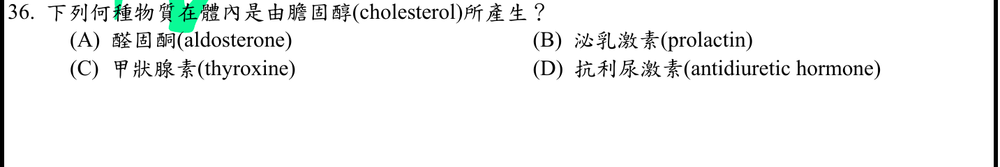
本地原卷PDF26 · 官方混科卷PDF26 · 官方原答案PDF1最下方生物表 · 已核對8/17生物釋疑PDF5下方及6 · 已核對8/19生物PDF34下方及35
官方採計：A 原答案：A
未列本輪取得8/17釋疑PDF5下方及6、8/19第二次會議官方組合PDF34下方及35；依同年答案採計，不宣稱沒有其他未取得公告
主分類：Ch45 Hormones and the Endocrine System
45.1 / Chemical Classes of Hormones
目錄行3001；條目起始印刷頁1001；實際目錄 PDF47
次分類：Ch45 Hormones and the Endocrine System
45.3 / Adrenal Hormones: Response to Stress
目錄行3039；條目起始印刷頁1012；實際目錄 PDF47
主分類理由：45.1 / Chemical Classes of Hormones：醛固酮屬類固醇，其化學類別決定以膽固醇為前驅物。
次分類理由：45.3 / Adrenal Hormones: Response to Stress：腎上腺激素條目確認醛固酮來自腎上腺皮質並調節鹽水平衡。
科學說明：官方A。膽固醇是類固醇激素的前驅物；酪胺酸是兒茶酚胺等的前驅來源，不適合醛固酮。本題問生合成起始物，不以腎臟靶效應取代主分類。
來源涵蓋範圍：Campbell正文支援分類原理；題設限定、章導論或條目邊界及科學措辭差異逐題保留。
教材正文：印刷1001／PDF1050、印刷1002／PDF1051、印刷1012／PDF1061、印刷1013／PDF1062、印刷1014／PDF1063
補充來源：本題未另列課本外來源
另行比較：題問來源前驅或腎臟效應哪一項優先
1001–1002類固醇源自膽固醇，A；腎上腺皮質醛固酮只是具體激素次目，未主歸腎元。
結論：證據確認，分類疑義已解決。完整覆核紀錄
Q37 · 49.2 / Emotions 正式分類
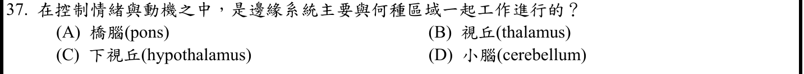
本地原卷PDF27 · 官方混科卷PDF27 · 官方原答案PDF1最下方生物表 · 釋疑PDF6 · 8/19第二次會議PDF35
官方採計：C 原答案：C
8/17及8/19第二次會議兩版生物釋疑均維持原答案C
主分類：Ch49 Nervous Systems
49.2 / Emotions
目錄行3261；條目起始印刷頁1095；實際目錄 PDF48
次分類：Ch45 Hormones and the Endocrine System
45.2 / Coordination of the Endocrine and Nervous Systems
目錄行3023；條目起始印刷頁1006；實際目錄 PDF47
主分類理由：49.2 / Emotions：邊緣系統參與情緒及動機，杏仁核等與下視丘的聯繫對應Emotions條目。
次分類理由：45.2 / Coordination of the Endocrine and Nervous Systems：神經內分泌協調補足下視丘連結內分泌與自主生理反應的角色。
科學說明：官方C，兩版釋疑維持。下視丘與邊緣系統協調情緒伴隨的生理反應。官方列Ganong Review of Medical Physiology26版；本輪補讀的是出版社Ganong Examination & Board Review2版第17章公開Introduction，不聲稱已取得官方所引26版全文。
來源涵蓋範圍：Campbell提供列示分類原理；精細生理及原題/版本差異由具名來源補足，實讀與檔案取得範圍見來源紀錄。
教材正文：印刷1006／PDF1055、印刷1007／PDF1056、印刷1092／PDF1141、印刷1093／PDF1142、印刷1095／PDF1144、印刷1096／PDF1145
補充來源：S10
另行比較：丘腦或橋腦是否是題定邊緣系統主要搭配
Campbell情緒/下視丘與具名Ganong公開段支持C；官方引用26版與本輪不同書2版嚴格區分，兩版官方結果一致。
結論：證據確認，分類疑義已解決。完整覆核紀錄
Q38 · 50.4 / Smell in Humans 正式分類
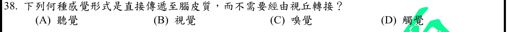
本地原卷PDF27 · 官方混科卷PDF27 · 官方原答案PDF1最下方生物表 · 已核對8/17生物釋疑PDF5下方及6 · 已核對8/19生物PDF34下方及35
官方採計：C 原答案：C
未列本輪取得8/17釋疑PDF5下方及6、8/19第二次會議官方組合PDF34下方及35；依同年答案採計，不宣稱沒有其他未取得公告
主分類：Ch50 Sensory and Motor Mechanisms
50.4 / Smell in Humans
目錄行3374；條目起始印刷頁1124；實際目錄 PDF49
次分類：Ch49 Nervous Systems
49.3 / Information Processing
目錄行3271；條目起始印刷頁1097；實際目錄 PDF48
主分類理由：50.4 / Smell in Humans：受問感覺為嗅覺，先定位化學感受的Smell條目。
次分類理由：49.3 / Information Processing：皮質感覺訊息處理說明多數感覺輸入經丘腦中繼，對照嗅覺例外。
科學說明：官方C。嗅覺到初級嗅皮質沒有必經丘腦的第一級中繼；不是嗅覺任何階段都與丘腦無關。Sela等丘腦病灶研究顯示辨識與愉悅度仍可受影響。Campbell1093的概括敘述與1097「多數」感覺傳入需按此範圍解讀。
來源涵蓋範圍：Campbell提供列示分類原理；精細生理及原題/版本差異由具名來源補足，實讀與檔案取得範圍見來源紀錄。
教材正文：印刷1092／PDF1141、印刷1093／PDF1142、印刷1097／PDF1146、印刷1124／PDF1173、印刷1125／PDF1174
補充來源：S11
另行比較：沒有初級丘腦中繼是否等於丘腦完全無嗅覺功能
Sela摘要有17病例支持初級與後續功能區分；C確認，教材概括all/most措辭保留，不曲解成零丘腦參與。
結論：證據確認，分類疑義已解決。完整覆核紀錄
Q39 · 44.4 / From Blood Filtrate to Urine: A Closer Look 正式分類
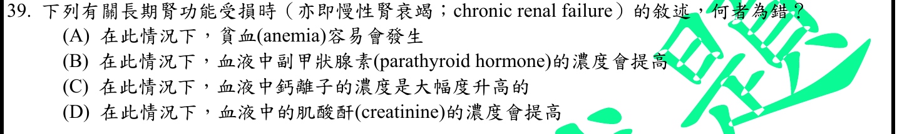
本地原卷PDF27 · 官方混科卷PDF27 · 官方原答案PDF1最下方生物表 · 已核對8/17生物釋疑PDF5下方及6 · 已核對8/19生物PDF34下方及35
官方採計：C 原答案：C
未列本輪取得8/17釋疑PDF5下方及6、8/19第二次會議官方組合PDF34下方及35；依同年答案採計，不宣稱沒有其他未取得公告
主分類：Ch44 Osmoregulation and Excretion
44.4 / From Blood Filtrate to Urine: A Closer Look
目錄行2974；條目起始印刷頁987；實際目錄 PDF47
次分類：Ch45 Hormones and the Endocrine System
45.3 / Parathyroid Hormone and Vitamin D: Control of Blood Calcium
目錄行3036；條目起始印刷頁1011；實際目錄 PDF47
次分類：Ch42 Circulation and Gas Exchange
42.4 / Blood Composition and Function
目錄行2802；條目起始印刷頁934；實際目錄 PDF46
主分類理由：44.4 / From Blood Filtrate to Urine: A Closer Look：慢性腎功能受損涉及濾液處理及排泄失調，主分類依腎元功能。
次分類理由：45.3 / Parathyroid Hormone and Vitamin D: Control of Blood Calcium：PTH與維生素D說明CKD礦質平衡；42.4 / Blood Composition and Function：血液組成的EPO段落說明腎病相關貧血。
科學說明：官方C為不正確敘述，血鈣「大幅增加」不是未加條件的典型CKD後果。腎功能下降可使肌酸酐累積、EPO不足及活性維生素D減少，鈣磷與PTH調節失衡。NIDDK明示CKD血鈣可低、正常或高；不能反向斷言所有CKD永遠低血鈣，治療與病程也會改變數值。
來源涵蓋範圍：Campbell提供列示分類原理；精細生理及原題/版本差異由具名來源補足，實讀與檔案取得範圍見來源紀錄。
教材正文：印刷936／PDF985、印刷987／PDF1036、印刷988／PDF1037、印刷989／PDF1038、印刷994／PDF1043、印刷995／PDF1044、印刷1011／PDF1060、印刷1012／PDF1061
補充來源：S12
另行比較：所有CKD是否必定低鈣才能排除C
NIDDK明确鈣可低正常或高，C大幅增加不是普遍典型；其餘貧血、PTH、肌酸酐由腎病機制解釋，來源差異不產生待審。
結論：證據確認，分類疑義已解決。完整覆核紀錄
Q40 · 42.3 / Blood Pressure 正式分類
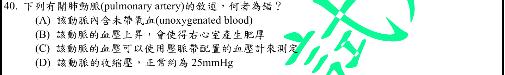
本地原卷PDF27 · 官方混科卷PDF27 · 官方原答案PDF1最下方生物表 · 已核對8/17生物釋疑PDF5下方及6 · 已核對8/19生物PDF34下方及35
官方採計：C 原答案：C
未列本輪取得8/17釋疑PDF5下方及6、8/19第二次會議官方組合PDF34下方及35；依同年答案採計，不宣稱沒有其他未取得公告
主分類：Ch42 Circulation and Gas Exchange
42.3 / Blood Pressure
目錄行2789；條目起始印刷頁930；實際目錄 PDF46
次分類：Ch42 Circulation and Gas Exchange
42.2 / Mammalian Circulation
目錄行2770；條目起始印刷頁926；實際目錄 PDF46
主分類理由：42.3 / Blood Pressure：題目以壓力大小與測量方法辨別肺動脈敘述，主歸Blood Pressure。
次分類理由：42.2 / Mammalian Circulation：哺乳類雙循環支持肺動脈血流方向、氧含量與體循環差異。
科學說明：官方C為錯誤敘述。一般肱動脈壓脈帶不能量得肺動脈壓，肺動脈壓須專門方法如導管；Klabunde圖示正常約25/10mmHg供量級比較。肺動脈含氧相對較低，不是完全沒有氧；不能把一般袖帶120/80直接套用。
來源涵蓋範圍：Campbell提供列示分類原理；精細生理及原題/版本差異由具名來源補足，實讀與檔案取得範圍見來源紀錄。
教材正文：印刷926／PDF975、印刷930／PDF979、印刷931／PDF980、印刷932／PDF981
補充來源：S13
另行比較：肺動脈壓與肱動脈壓及楔壓能否互換
血壓主目加肺循環次目，常規袖帶不能直接測肺動脈所以C錯；25mmHg收縮量級有具名教材，與楔壓不同。
結論：證據確認，分類疑義已解決。完整覆核紀錄
Q41 · 7.1 / The Fluidity of Membranes 正式分類
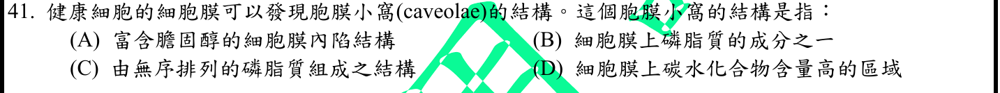
本地原卷PDF27 · 官方混科卷PDF27 · 官方原答案PDF1最下方生物表 · 已核對8/17生物釋疑PDF5下方及6 · 已核對8/19生物PDF34下方及35
官方採計：A 原答案：A
未列本輪取得8/17釋疑PDF5下方及6、8/19第二次會議官方組合PDF34下方及35；依同年答案採計，不宣稱沒有其他未取得公告
主分類：Ch07 Membrane Structure and Function
7.1 / The Fluidity of Membranes
目錄行411；條目起始印刷頁128；實際目錄 PDF36
次分類：Ch07 Membrane Structure and Function
7.5 / Endocytosis
目錄行466；條目起始印刷頁139；實際目錄 PDF36
主分類理由：7.1 / The Fluidity of Membranes：胞膜小窩的膽固醇富集結構先按膜脂組成與性質分類，課本外精細構造需明列來源。
次分類理由：7.5 / Endocytosis：胞吞作用提供膜內陷形成運輸囊泡的框架。
科學說明：官方A。Caveolae是富膽固醇的細胞膜內陷，Alberts胞吞章直接描述燒瓶狀內陷與脂筏組成；不是所有健康細胞都必有，也不能把它與clathrin包被小窩混為一種。Campbell提供一般膜及胞吞原理，不聲稱它直接證明caveolae的全部細節。
來源涵蓋範圍：Campbell提供列示分類原理；精細生理及原題/版本差異由具名來源補足，實讀與檔案取得範圍見來源紀錄。
教材正文：印刷128／PDF177、印刷129／PDF178、印刷139／PDF188、印刷140／PDF189
補充來源：S14
另行比較：caveolae是否就是無序磷脂或clathrin包被小窩
Alberts專節確認富膽固醇膜內陷A；Campbell僅提供膜脂及胞吞框架，禁止以一般圖當caveolae直接圖證。
結論：證據確認，分類疑義已解決。完整覆核紀錄
Q42 · 18.2 / Regulation of Chromatin Structure 正式分類
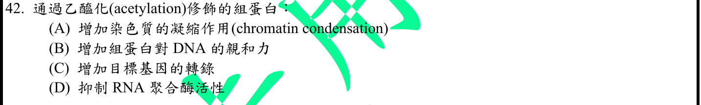
本地原卷PDF27 · 官方混科卷PDF27 · 官方原答案PDF1最下方生物表 · 已核對8/17生物釋疑PDF5下方及6 · 已核對8/19生物PDF34下方及35
官方採計：C 原答案：C
未列本輪取得8/17釋疑PDF5下方及6、8/19第二次會議官方組合PDF34下方及35；依同年答案採計，不宣稱沒有其他未取得公告
主分類：Ch18 Regulation of Gene Expression
18.2 / Regulation of Chromatin Structure
目錄行1123；條目起始印刷頁371；實際目錄 PDF39
主分類理由：18.2 / Regulation of Chromatin Structure：組蛋白乙醯化改變染色質包裝與DNA可及性，是染色質層次的基因表現調控。
次分類理由：無另列最小次條目；371–372支持降低緊密包裝、通常促進轉錄C；非直接改DNA序列，來源的概括作用加通常限定。
科學說明：官方C。乙醯化通常減弱組蛋白與DNA的緊密作用，有利轉錄機器接近DNA；並非DNA鹼基序列突變，也不保證任何位置的乙醯化都必然開啟每個基因。
來源涵蓋範圍：Campbell正文支援分類原理；題設限定、章導論或條目邊界及科學措辭差異逐題保留。
教材正文：印刷371／PDF420、印刷372／PDF421
補充來源：本題未另列課本外來源
另行比較：組蛋白乙醯化是否增加DNA親和力與凝縮
371–372支持降低緊密包裝、通常促進轉錄C；非直接改DNA序列，來源的概括作用加通常限定。
結論：證據確認，分類疑義已解決。完整覆核紀錄
Q43 · 16.2 / Proofreading and Repairing DNA 正式分類
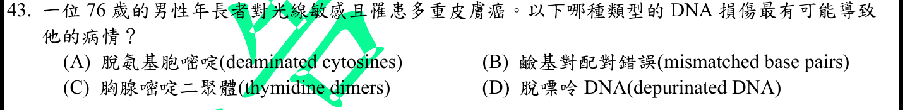
本地原卷PDF27 · 官方混科卷PDF27 · 官方原答案PDF1最下方生物表 · 已核對8/17生物釋疑PDF5下方及6 · 已核對8/19生物PDF34下方及35
官方採計：C 原答案：C
未列本輪取得8/17釋疑PDF5下方及6、8/19第二次會議官方組合PDF34下方及35；依同年答案採計，不宣稱沒有其他未取得公告
主分類：Ch16 The Molecular Basis of Inheritance
16.2 / Proofreading and Repairing DNA
目錄行1013；條目起始印刷頁327；實際目錄 PDF39
主分類理由：16.2 / Proofreading and Repairing DNA：紫外線造成嘧啶二聚體，核苷酸切除修復失效情境直接落在DNA修復。
次分類理由：無另列最小次條目；327–328核苷酸切除修復與thymine dimer支持C；原題thymidine dimers保留，76歲情境不夠作遺傳疾病確診。
科學說明：官方C。相鄰胸腺嘧啶可形成二聚體，修復缺陷提高UV損伤風險。原題英文thymidine dimer與標準thymine dimer用詞差別保存；題幹老年個案本身不足以確診遺傳性著色性乾皮症，只以其修復原理分類。
來源涵蓋範圍：Campbell正文支援分類原理；題設限定、章導論或條目邊界及科學措辭差異逐題保留。
教材正文：印刷327／PDF376、印刷328／PDF377
補充來源：本題未另列課本外來源
另行比較：題幹能否直接診斷遺傳病而非辨DNA損傷
327–328核苷酸切除修復與thymine dimer支持C；原題thymidine dimers保留，76歲情境不夠作遺傳疾病確診。
結論：證據確認，分類疑義已解決。完整覆核紀錄
Q44 · 17.5 / Types of Small-Scale Mutations 正式分類
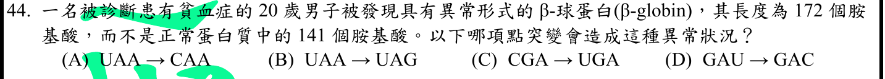
本地原卷PDF27 · 官方混科卷PDF27 · 官方原答案PDF1最下方生物表 · 已核對8/17生物釋疑PDF5下方及6 · 已核對8/19生物PDF34下方及35
官方採計：A 原答案：A
未列本輪取得8/17釋疑PDF5下方及6、8/19第二次會議官方組合PDF34下方及35；依同年答案採計，不宣稱沒有其他未取得公告
主分類：Ch17 Gene Expression: From Gene to Protein
17.5 / Types of Small-Scale Mutations
目錄行1085；條目起始印刷頁357；實際目錄 PDF39
次分類：Ch17 Gene Expression: From Gene to Protein
17.1 / The Genetic Code
目錄行1042；條目起始印刷頁340；實際目錄 PDF39
主分類理由：17.5 / Types of Small-Scale Mutations：終止密碼轉為可編碼密碼使多肽延長，屬小尺度鹼基替換的功能後果。
次分類理由：17.1 / The Genetic Code：遺傳密碼表可獨立判讀UAA、CAA、UAG、CGA、UGA、GAU與GAC。
科學說明：官方A。UAA→CAA使終止訊號變為Gln，可能讀至下游終止密碼；B仍為終止，C造成提前終止，D為同義替換。原題正常β鏈141個胺基酸有誤：UniProt P68871成熟鏈2–147共146個，含起始Met全序列147個。原題141與172均保留；僅憑這次替換無法推算延長後一定172個，仍能判斷A的stop-loss機制。
來源涵蓋範圍：Campbell提供列示分類原理；精細生理及原題/版本差異由具名來源補足，實讀與檔案取得範圍見來源紀錄。
教材正文：印刷340／PDF389、印刷341／PDF390、印刷357／PDF406、印刷358／PDF407、印刷359／PDF408
補充來源：S15
另行比較：四個實際密碼子變化及β鏈長度是否正確
第二輪完整原圖确认A UAA→CAA、B UAA→UAG、C CGA→UGA、D GAU→GAC；修正草稿錯誤列碼，UniProt成熟146確認來源差異，stop-loss A不受影響。
結論：證據確認，分類疑義已解決。完整覆核紀錄
Q45 · 45.1 / Cellular Hormone Response Pathways 正式分類
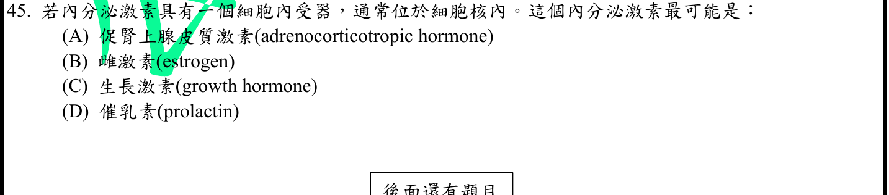
本地原卷PDF27 · 官方混科卷PDF27 · 官方原答案PDF1最下方生物表 · 已核對8/17生物釋疑PDF5下方及6 · 已核對8/19生物PDF34下方及35
官方採計：B 原答案：B
未列本輪取得8/17釋疑PDF5下方及6、8/19第二次會議官方組合PDF34下方及35；依同年答案採計，不宣稱沒有其他未取得公告
主分類：Ch45 Hormones and the Endocrine System
45.1 / Cellular Hormone Response Pathways
目錄行3004；條目起始印刷頁1002；實際目錄 PDF47
次分類：Ch11 Cell Communication
11.2 / Intracellular Receptors
目錄行711；條目起始印刷頁220；實際目錄 PDF38
主分類理由：45.1 / Cellular Hormone Response Pathways：雌激素可進入細胞結合胞內受體，題目主要比較激素引發反應的受體位置。
次分類理由：11.2 / Intracellular Receptors：胞內受體條目補足脂溶性訊號調節基因表現機制。
科學說明：官方B。雌激素的典型作用經胞內核受體；其他題列蛋白質激素通常經膜受體。這是題目要求的典型路徑，不宣稱雌激素完全沒有快速膜相關作用，也不把所有胞內受體配體限定為類固醇。
來源涵蓋範圍：Campbell正文支援分類原理；題設限定、章導論或條目邊界及科學措辭差異逐題保留。
教材正文：印刷220／PDF269、印刷221／PDF270、印刷1001／PDF1050、印刷1002／PDF1051、印刷1003／PDF1052
補充來源：本題未另列課本外來源
另行比較：四個激素何者典型胞內受體而非膜受體
1002–1003與220–221支持雌激素B；胞內受體不限類固醇，但題列其他三者為蛋白/胜肽激素。
結論：證據確認，分類疑義已解決。完整覆核紀錄
Q46 · 12.3 / The Cell Cycle Control System 正式分類
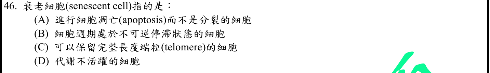
本地原卷PDF28 · 官方混科卷PDF28 · 官方原答案PDF1最下方生物表 · 已核對8/17生物釋疑PDF5下方及6 · 已核對8/19生物PDF34下方及35
官方採計：B 原答案：B
未列本輪取得8/17釋疑PDF5下方及6、8/19第二次會議官方組合PDF34下方及35；依同年答案採計，不宣稱沒有其他未取得公告
主分類：Ch12 The Cell Cycle
12.3 / The Cell Cycle Control System
目錄行789；條目起始印刷頁244；實際目錄 PDF38
次分類：Ch16 The Molecular Basis of Inheritance
16.2 / Replicating the Ends of DNA Molecules
目錄行1019；條目起始印刷頁328；實際目錄 PDF39
主分類理由：12.3 / The Cell Cycle Control System：細胞老化的核心為穩定的細胞週期停滯，按細胞週期控制最小條目分類。
次分類理由：16.2 / Replicating the Ends of DNA Molecules：端粒縮短可限制體細胞持續增殖，是複製性老化的相關原因，不代表全部老化只有此原因。
科學說明：官方B。Senescence典型為持續的增殖停滯，細胞仍可存活並有代謝與分泌，不等於凋亡或壞死。Campbell控制點與端粒段落提供框架，精確senescence定義以González-Gualda等原作者指南摘要補足；一般短暫可逆靜止G0不能直接當作已證明細胞老化。
來源涵蓋範圍：Campbell提供列示分類原理；精細生理及原題/版本差異由具名來源補足，實讀與檔案取得範圍見來源紀錄。
教材正文：印刷244／PDF293、印刷245／PDF294、印刷247／PDF296、印刷248／PDF297、印刷249／PDF298、印刷328／PDF377、印刷329／PDF378
補充來源：S16
另行比較：老化能否用凋亡或單一長端粒狀態定义
244–249細胞週期及328–329端粒提供分類，González-Gualda等原作者摘要支持穩定停滯B；不可逆為題目典型說法，不用所有不增殖細胞替代senescence。
結論：證據確認，分類疑義已解決。完整覆核紀錄
Q47 · 25.4 / Adaptive Radiations 正式分類
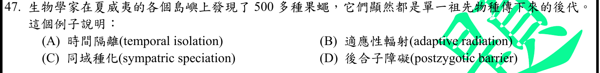
本地原卷PDF28 · 官方混科卷PDF28 · 官方原答案PDF1最下方生物表 · 釋疑PDF6 · 8/19第二次會議PDF35
官方採計：B 原答案：B
8/17及8/19第二次會議兩版生物釋疑均維持原答案B
主分類：Ch25 The History of Life on Earth
25.4 / Adaptive Radiations
目錄行1589；條目起始印刷頁542；實際目錄 PDF41
主分類理由：25.4 / Adaptive Radiations：單一祖先在群島分化為多個生態不同物種，核心為適應輻射。
次分類理由：無另列最小次條目；542–544島嶼適應輻射與兩版釋疑支持B，未僅依族群數推斷同域或特定隔離途徑。
科學說明：官方B，兩版釋疑維持。教材542–544以島嶼等環境說明適應輻射，和題設果蠅多樣化一致；僅憑總物種數不能推成所有種都已證明同一種地理隔離模式，也不改歸單純島嶼面積與滅絕平衡模型。
來源涵蓋範圍：Campbell正文支援分類原理；題設限定、章導論或條目邊界及科學措辭差異逐題保留。
教材正文：印刷542／PDF591、印刷543／PDF592、印刷544／PDF593
補充來源：本題未另列課本外來源
另行比較：500餘果蠅是否足證同域種化
542–544島嶼適應輻射與兩版釋疑支持B，未僅依族群數推斷同域或特定隔離途徑。
結論：證據確認，分類疑義已解決。完整覆核紀錄
Q48 · 42.3 / Capillary Function 正式分類
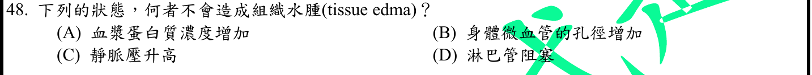
本地原卷PDF28 · 官方混科卷PDF28 · 官方原答案PDF1最下方生物表 · 已核對8/17生物釋疑PDF5下方及6 · 已核對8/19生物PDF34下方及35
官方採計：A 原答案：A
未列本輪取得8/17釋疑PDF5下方及6、8/19第二次會議官方組合PDF34下方及35；依同年答案採計，不宣稱沒有其他未取得公告
主分類：Ch42 Circulation and Gas Exchange
42.3 / Capillary Function
目錄行2792；條目起始印刷頁932；實際目錄 PDF46
次分類：Ch42 Circulation and Gas Exchange
42.3 / Fluid Return by the Lymphatic System
目錄行2795；條目起始印刷頁933；實際目錄 PDF46
主分類理由：42.3 / Capillary Function：水腫取決微血管液體交換，血漿蛋白造成的膠體滲透作用是題目判別核心。
次分類理由：42.3 / Fluid Return by the Lymphatic System：淋巴回流回收組織液，阻塞可造成水腫。
科學說明：官方A。其他條件相同時，增加留在血管內的血漿蛋白提高膠體滲透作用，不是促進水腫的因素；靜脈壓、微血管通透性上升或淋巴阻塞可促進水腫。此比較依蛋白主要留在血管的條件，不把所有臨床水腫簡化成單一壓力。
來源涵蓋範圍：Campbell正文支援分類原理；題設限定、章導論或條目邊界及科學措辭差異逐題保留。
教材正文：印刷932／PDF981、印刷933／PDF982、印刷934／PDF983
補充來源：本題未另列課本外來源
另行比較：膠體滲透力增強是否會促進組織液淨流出
932–934血管內蛋白与淋巴回流機制支持A不致水腫，其他條件相同與屏障保留為前提。
結論：證據確認，分類疑義已解決。完整覆核紀錄
Q49 · 43.3 / Immune Rejection 正式分類
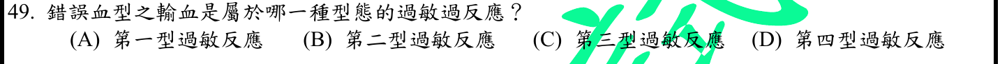
本地原卷PDF28 · 官方混科卷PDF28 · 官方原答案PDF1最下方生物表 · 已核對8/17生物釋疑PDF5下方及6 · 已核對8/19生物PDF34下方及35
官方採計：B 原答案：B
未列本輪取得8/17釋疑PDF5下方及6、8/19第二次會議官方組合PDF34下方及35；依同年答案採計，不宣稱沒有其他未取得公告
主分類：Ch43 The Immune System
43.3 / Immune Rejection
目錄行2917；條目起始印刷頁969；實際目錄 PDF47
次分類：Ch43 The Immune System
43.4 / Exaggerated, Self-Directed, and Diminished Immune Responses
目錄行2924；條目起始印刷頁970；實際目錄 PDF47
主分類理由：43.3 / Immune Rejection：不合血型輸血引發針對紅血球抗原的免疫破壞，最小主目是組織及血液的免疫排斥。
次分類理由：43.4 / Exaggerated, Self-Directed, and Diminished Immune Responses：過強免疫反應中的IgE過敏可作第一型對照，保留同章次目而不多計章次。
科學說明：官方B，第二型。依Janeway機制分類與Dean輸血章，抗體結合紅血球表面抗原可引起補體及細胞清除；ABO常見IgM，也可有IgG等情況。重點是細胞表面標的，非可溶性免疫複合物的第三型、IgE肥大細胞的第一型或T細胞延遲反應的第四型。分類為本輪綜合機制判讀。
來源涵蓋範圍：Campbell提供列示分類原理；精細生理及原題/版本差異由具名來源補足，實讀與檔案取得範圍見來源紀錄。
教材正文：印刷969／PDF1018、印刷970／PDF1019、印刷971／PDF1020
補充來源：S17
另行比較：不合血型是否屬免疫複合物第三型
抗體靶在紅血球表面，Dean輸血章與Janeway分類綜合支持II型B；同章免疫排斥與IgE過敏對照均保存。
結論：證據確認，分類疑義已解決。完整覆核紀錄
Q50 · 43.2 / Antigen Recognition by T Cells 正式分類
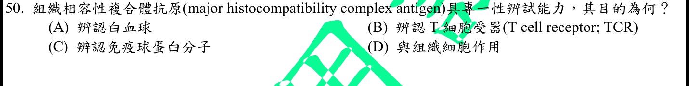
本地原卷PDF28 · 官方混科卷PDF28 · 官方原答案PDF1最下方生物表 · 釋疑PDF6 · 8/19第二次會議PDF35
官方採計：B 原答案：B
8/17及8/19第二次會議兩版生物釋疑均維持原答案B
主分類：Ch43 The Immune System
43.2 / Antigen Recognition by T Cells
目錄行2886；條目起始印刷頁959；實際目錄 PDF47
主分類理由：43.2 / Antigen Recognition by T Cells：T細胞受體辨識MHC呈現的抗原胜肽，直接對應T Cell Antigen Recognition。
次分類理由：無另列最小次條目；原圖、兩版釋疑與959–960核對，官方B按TCR與胜肽MHC結合；識別方向的措辭不改原題，分類落T Cell Antigen Recognition。
科學說明：官方B，兩版釋疑維持。原題將MHC說成能辨識某分子，方向與術語不精確；官方釋疑解為MHC-Ag複合物與T細胞受體結合。標準描述是MHC呈現胜肽、TCR辨識胜肽-MHC。NK受體確能辨識某些MHC訊號，不因此私改本題官方採計；保留題幹與釋疑重述的差異。
來源涵蓋範圍：Campbell正文支援分類原理；題設限定、章導論或條目邊界及科學措辭差異逐題保留。
教材正文：印刷959／PDF1008、印刷960／PDF1009
補充來源：本題未另列課本外來源
另行比較：MHC辨識TCR的原句是否可直接當標準免疫描述
原圖、兩版釋疑與959–960核對，官方B按TCR與胜肽MHC結合；識別方向的措辭不改原題，分類落T Cell Antigen Recognition。
結論：證據確認，分類疑義已解決。完整覆核紀錄
目前篩選沒有符合的題目；本年度總數仍為50題。
補充來源
查證日期：2026-09-09。使用原始研究摘要、官方資料與作者教材，不宣稱所有出版商全文已取得。詳細界線見來源紀錄。
- S01 MedlinePlus：Amino acids
現列9種必需胺基酸含methionine與histidine，記錄與本地12版成人8種的差異。
實讀範圍：實讀Essential與Nonessential amino acids小節；只取分類，不作個人營養建議。
原始來源1 - S02 GeneReviews：Phenylalanine Hydroxylase Deficiency
PKU新生兒篩檢使用乾血點Phe與Tyr，Phe異常須確認。
實讀範圍：實讀Diagnosis與Newborn screening相关段落，不宣稱完成整章臨床指引審查。
原始來源1 - S03 FDA：Prozac label，2011
FDA標示fluoxetine為選擇性血清素再吸收抑制劑，與Q11機制一致。
實讀範圍：實讀標示首張摘要的SSRI分類；檔為2011歷史標示，不作現行劑量或安全性建議。
原始來源1 - S04 Alberts血球形成章；Hashimoto等，Immunity2013
單核球可成熟為巨噬細胞；組織常駐巨噬細胞來源與維持不應一律歸成人單核球。
實讀範圍：實讀Alberts Three Main Categories of White Blood Cells段；Hashimoto原研究PubMed可取得摘要/標題，限制為小鼠追蹤證據，未宣稱閱讀出版商全文。
原始來源1 · 原始來源2 - S05 Bevan1984：Binary Agrobacterium vectors for plant transformation
Ti vir基因可促進T-DNA邊界內序列轉入植物核基因組，支持載體機制。
實讀範圍：PubMed原研究摘要及書目；Nucleic Acids Research12:8711–8721，doi10.1093/nar/12.22.8711；未把摘要當成全文。
原始來源1 - S06 Richard Klabunde：Cardiac action potentials
心肌動作電位約200–400ms量級及平台期，補足Campbell定性敘述。
實讀範圍：實讀動作電位時長比較段及non-pacemaker action potentials平台期段；数值非固定個體常數。
原始來源1 · 原始來源2 - S07 Richard Klabunde：Ejection Fraction
EF等於SV/EDV，SV等於EDV減ESV。
實讀範圍：實讀定義與公式段；只取公式與單位，不延伸疾病診斷。
原始來源1 - S08 Richard Klabunde：Cardiac excitation-contraction coupling
β腎上腺素刺激可增cAMP及PKA訊號，支持Q33A。
實讀範圍：實讀β受體、cAMP與PKA段；不宣稱Campbell直接寫出題文特殊受體拼法。
原始來源1 - S09 Janeway Immunobiology5e：The mucosal immune system
派爾斑、M細胞轉運與黏膜適應免疫有關，非蛋白消化器官。
實讀範圍：實讀10-13相關文字與圖說；M細胞轉運和下方APCs角色分開。
原始來源1 - S10 Ganong Medical Physiology Examination & Board Review2e：Hypothalamic Regulation of Hormonal Functions，Chapter17
下視丘與邊緣系統作為功能單位調節情緒及本能性行為。
實讀範圍：實讀出版社可公開Introduction段；此為Examination & Board Review2e，非官方釋疑引的Review of Medical Physiology26e，未取得後者全文。
原始來源1 - S11 Sela等2009：Spared and impaired olfactory abilities after thalamic lesions
初級嗅皮質前不需丘腦中繼，但丘腦病灶可影響嗅覺辨識及愉悅度。
實讀範圍：實讀PubMed原研究摘要，17位單側丘腦病灶患者與對照；不宣稱整篇全文。
原始來源1 - S12 NIDDK：CKD礦物骨病、貧血及併發症
CKD影響EPO與維生素D、鈣磷及PTH；血鈣可低正常或高，題中必然大增不成立。
實讀範圍：實讀各頁病因與礦物骨病/貧血機制段；不將疾病一般知識當個人醫療建議。
原始來源1 · 原始來源2 · 原始來源3 - S13 Richard Klabunde：Pulmonary Capillary Wedge Pressure
肺動脈壓在導管量測路徑示意約25/10mmHg；不是一般肱動脈壓脈帶直接讀值。
實讀範圍：實讀導管路徑與右心室/肺動脈壓段及圖說；不把肺動脈壓與楔壓混為一值。
原始來源1 - S14 Alberts Molecular Biology of the Cell4e：Endocytosis
胞膜小窩屬富膽固醇區域形成的膜內陷，與clathrin包被小窩區別。
實讀範圍：實讀Not All Pinocytic Vesicles Are Clathrin-coated段與相鄰圖說；不將舊版所有脂筏推測當成現行完整模型。
原始來源1 - S15 UniProtKB reviewed P68871：Hemoglobin subunit beta
序列147AA，成熟CHAIN2..147為146AA；原题141與此不符。
實讀範圍：實讀ID行、INIT_MET移除註記與CHAIN2..147；未由此宣稱查得原題172長度特定變異。
原始來源1 - S16 González-Gualda等：A guide to assessing cellular senescence in vitro and in vivo，2021（2020線上）
senescence為受損或壓力後穩定細胞週期停滯，伴相關分泌表型；非細胞死亡同義詞。
實讀範圍：PubMed原作者指南摘要定義段，未宣稱全文實讀或所有細胞老化的單一診斷標記。
原始來源1 - S17 Janeway Immunobiology機制分類；Dean Blood Groups and Red Cell Antigens，Blood transfusions
依細胞表面抗原與抗體破壞機制判為第二型，區別IgE及可溶性免疫複合物。
實讀範圍：實讀Glossary hypersensitivity條目與Dean2005輸血章免疫反應段；ABO抗體可含IgM，不能把Glossary的IgG簡述當排除IgM。
原始來源1 · 原始來源2